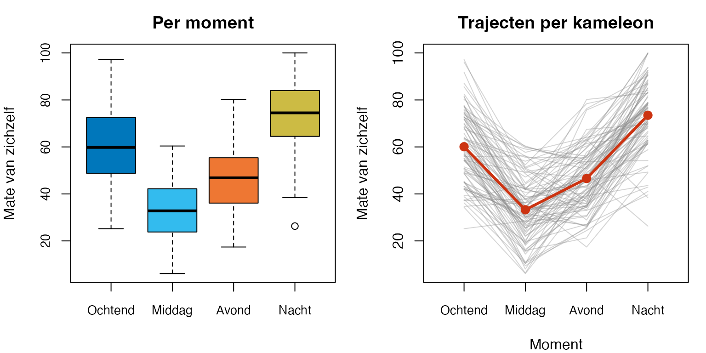

De kameleon zat op een tak en wisselde nauwelijks merkbaar van kleur.
“Wie mij op één moment vastlegt, mist het voornaamste,” zei hij. “Op een ander moment ben ik weer iemand anders, en allebei ben ik.”
Negentig kameleons, vier momenten van de dag — ochtend, middag, avond, nacht. Per kameleon hetzelfde meetinstrument: mate_van_zichzelf (-). Niet vier groepen kameleons; dezelfde kameleon vier keer. Vraag: verschilt de mate-van-zichzelf systematisch tussen momenten — niet tussen dieren, maar binnen elk dier?
De techniek heet repeated measures ANOVARMA.
Bij RMA stel je dezelfde drie vragen als bij ANOVA, maar nu over herhaalde metingen op dezelfde proefpersoon:
Voorspelt het samen iets? — de multivariate -toets (Pillai’s trace en variants) op het binnen-persoon-effect van moment.
Tussen welke momenten zit het verschil? — polynomiale of geplande contrasten, met Bonferroni-correctie voor paarsgewijze vergelijkingen.
Klopt het allemaal wel? — multivariate normaliteit van de vier metingen samen, en of de toets daar robuust tegen is.
TipWat je na dit thema moet kunnen
Voor het tentamen en de R-toets moet je:
herkennen wanneer RMA de juiste techniek is: dezelfde personen meerdere keren gemeten, eventueel met een tussen-groepen-factor erbij (een gemengd design);
de uitvoer lezen: de multivariate toets bovenaan, de univariate tabel eronder (met Mauchly’s toets op sphericity), bij een gemengd design ook de hoofdeffecten en de interactie — en zeggen of de toets robuust is;
contrasten opstellen bij een onderzoeksvraag (en andersom: uit een tabel met contrasten de vragen halen), hun waarde uitrekenen uit de gemiddelden, en checken of een set orthogonaal is;
er een conclusie bij schrijven, in gewone woorden en in APA-stijl.
In R doe je dat met pivot_longer(), factorial_design(), Anova() en summary(), en voor de paren emmeans_test() met Bonferroni; bij een gemengd design ook interaction.plot() en emmeans().
Het gemengde design oefent dit hoofdstuk alleen in algemene vorm, zonder eigen data. De cursus oefent het wél, in de werkgroep en in de R-oefentoets.
OpmerkingA. Wat is RMA?
Repeated measures ANOVA test of metingen binnen dezelfde persoon systematisch verschillen tussen condities of momenten. Bij gewone factorial ANOVA zaten in elke groep verschillende dieren; bij RMA zit elke kameleon zelf in elke conditie — ze zijn elkaars vergelijkingsbasis.
Voordeel: tussen-personen-variantie wordt uit de fout gehaald. Wat overblijft is binnen-persoon-variatie — typisch veel kleiner dan tussen-personen, en daarmee een krachtiger toets bij dezelfde .
OpmerkingB. Multivariate vs univariate — onze keuze
RMA kent twee toetsroutes:
Univariate: behandelt de herhaalde metingen als één lange vector, vereist sphericity (gelijke varianties van verschilscores tussen alle paren). Bij schending: Greenhouse-Geisser- of Huynh-Feldt-correctie.
Multivariate: maakt van de metingen eerst contrasten (verschillen tussen de momenten) en toetst dan met een gewone MANOVA of die allemaal nul zijn, met Pillai/Wilks/Hotelling-Lawley/Roy. Het cursusboek noemt het letterlijk een MANOVA op contrasten. Geen sphericity-aanname nodig.
Multivariate
Univariate
Sphericity nodig?
nee
ja (anders GG/HF-correctie)
Power bij kleine
minder krachtig
krachtiger als sphericity klopt
Power bij grotere
krachtig genoeg
krachtig
Aansluiting op MANOVA
direct (, , , )
indirect
Didactisch
bouwt voort op thema 5
nieuwe denkstap
Wij volgen de cursus: de multivariate route is de hoofdroute. Het cursusboek verantwoordt die keuze nuchter:
Dit is niet omdat de multivariate aanpak superieur is aan de univariate aanpak — beide leiden meestal (maar niet altijd!) tot ongeveer dezelfde resultaten, en allebei hebben ze sterke en zwakke kanten. De multivariate aanpak is hier vooral om praktische redenen gekozen: omdat het op deze manier het snelst en eenvoudigst uit te leggen is, voortbouwend op de eerder behandelde MANOVA.
— het cursusboek, p. 104 (vertaald uit het Engels)
Pillai is de standaard-keuze, conform thema 5.
De univariate route verdwijnt niet uit beeld. Elke RMA-uitvoer in R zet onder de multivariate toetsen ook de univariate tabel, met Mauchly’s toets op sphericity en de Greenhouse-Geisser- en Huynh-Feldt-correctie. Die lees je af (zie het kader na T3); je rapporteert de multivariate , want die heeft de sphericity-aanname helemaal niet nodig.
OpmerkingC. Kameleon-frame — per moment iemand anders
Een kameleon laat zich slecht beschrijven door één meting. Op één moment is hij rustig en bedacht, op een ander moment fel en aanwezig — en in beide gevallen is hij zichzelf, maar dan wel een ander stuk van zichzelf. Wie hem op één moment vastlegt, mist de kleur eronder.
RMA pakt deze veelheid serieus: voor elke kameleon meten we op meerdere momenten, en kijken niet of kameleons onderling verschillen, maar of de momenten binnen kameleons verschillen. Niet “wat is een kameleon?”, maar “hoe verandert hij?”
Eén ding om mee te nemen: omdat dezelfde kameleon vier keer wordt gemeten, kan de volgorde van metingen het resultaat beïnvloeden — het carry-over-effect. Een kameleon die net opgeschrikt is in de ochtend zit nog in zijn schrik in de middag. In de praktijk wordt dat ondervangen door de volgorde te randomiseren of te counterbalancen (bij meerdere experimentele condities elke volgorde even vaak toepassen). Bij vaste tijdmomenten zoals onze ochtend-middag-avond-nacht is randomiseren niet mogelijk; dan analyseer je het in de tijd zoals hij is, en houd je in je interpretatie rekening met dat eerdere metingen latere kunnen kleuren.
OpmerkingHoe dit hoofdstuk leest
Dit hoofdstuk volgt dezelfde drie-laagse structuur als thema 1, 2, 3, 4 en 5:
Verhaal-frame — wat de kameleon doet of denkt.
Algemene vorm — abstract, statistiek-Latijn met Y1, Y2, Y3, Y4, mijn_data.
Voor onze dieren — uitvoerend, met # hekjes en concrete namen.
De antwoorden staan dichtgeklapt onder hun vraag: klap ze pas open na je eigen poging. T-vragen vlechten zich tussen de hoofdvragen door om je rekenintuïtie te oefenen.
Werkmaterialen — R-pakketten en functies
De kameleon pakt zijn gereedschap
Gereedschap
Waar het voor is
Pakket
pivot_longer(), pivot_wider()
Wide ↔︎ long format: van één rij per dier naar één rij per meting, en terug
tidyr
factor(x, levels = …)
De momenten als factor, in de goede volgorde
base
factorial_design()
Legt het design vast: wie het dier is, welke factor binnen en welke tussen
rstatix
Anova(fd$model, idata, idesign, icontrasts, type = 3)
De RMA zelf: multivariate en univariate toetsen
car
summary(res, multivariate = TRUE)
Uitvoer met alle vier teststatistics, en daaronder de univariate tabel
car
emmeans_test()
Paarsgewijze vergelijking van de momenten, met Bonferroni
rstatix
aov(… + Error(id/moment))
Het model dat we bij de paren meegeven: de metingen van één dier horen bij elkaar
stats
interaction.plot()
Bij een gemengd design: per groep een lijn door de gemiddelden van de momenten
stats
emmeans()
Bij een gemengd design: het gemiddelde per groep per moment
emmeans
Notatie — symbolen voor RMA
OpmerkingSleutelsymbolen in dit hoofdstuk
In dit oefenboek zie je telkens dezelfde notatie:
— aantal proefpersonen (hier: kameleons); in een APA-zin heet het totaal . Het aantal metingen, , schrijf je zonder symbool.
— aantal niveaus van de within-subject factor. Voor de kameleon: (ochtend, middag, avond, nacht).
— vector van populatie-gemiddelden over de momenten: .
— Wilks’ Lambda binnen de RMA. Klein = sterk effect.
— Pillai’s trace. Groot = sterk effect.
— Hotelling-Lawley trace. Groot = sterk effect.
— Roy’s largest root. Groot = sterk effect.
— APA-italic, hier als -approximatie van elk van de vier teststatistics.
— hypothesis . Voor eenwegs-RMA met momenten: . In de uitvoer: num Df.
— error van de -toets. Lees je af in de uitvoer, bij den Df.
— -waarde van de -approximatie.
Polynomiale contrasten — orthogonale gewichten voor lineaire (), kwadratische (), kubische () trends over geordende niveaus.
Voor inferentie spreek je over de populatie-gemiddelden ; voor rapportage over de steekproef-gemiddelden . APA-cursief geldt voor Latijnse statistische symbolen, ook als ze uit meer letters bestaan (, , , , , , ); afkortingen en namen blijven rechtop (, ).
TipVuistregels zijn afspraken, geen wetten
De drempels in dit oefenboek zijn breed gangbare conventies — niet universeel:
Aantal proefpersonen: per groep maakt de multivariate robuust tegen schending van multivariate normaliteit (zoals bij MANOVA in thema 5).
Welke teststatistic: bij een RMA zonder tussen-groepen-factor geven Pillai, Wilks, Hotelling-Lawley en Roy hetzelfde -getal (waarom: zie vraag 6.1 i). Standaard rapporteer je Pillai als primary, conform thema 5. Bij een gemengd design met drie of meer groepen lopen ze voor de interactie uiteen (in de kolom Df staat dan meer dan ); dan vraagt het R-practicum van de cursus alle vier.
Bonferroni voor paren: bij momenten zijn er paarsgewijze vergelijkingen. Voor : zes paren, . Strenger dan unprotected paired -tests.
Polynomiale contrasten: voor geordende niveaus (tijd, dosis) toets je ermee of het verloop lineair, kwadratisch of kubisch is. Voor ongeordende niveaus (kleuren, condities) horen ze niet thuis.
Sphericity: in dit oefenboek niet als hoofdroute behandeld, maar de univariate-route bestaat. Greenhouse-Geisser- en Huynh-Feldt-correcties horen daar bij — niet bij de multivariate route.
Verschillende vakgroepen, docenten en handboeken kiezen iets andere drempels. Als je voor een tentamen of opdracht werkt, check altijd in je eigen college-sheets welke drempels je docent of vakgroep hanteert. Wij volgen hier consistent één set, maar dat is een keuze, geen natuurwet.
OpmerkingCode in dit hoofdstuk — wat moet je kunnen typen?
Code die je zelf moet kunnen typen op de R-toets staat open: pivot_longer() en factor(…, levels = …) voor het lange format, factorial_design(), Anova(…, icontrasts = c("contr.sum", "contr.poly"), type = 3), summary(…, multivariate = TRUE), voor de paren emmeans_test(…, p.adjust.method = "bonferroni") (de cursus zonder model =, wij mét het aov()-model — waarom, staat bij de paren), en bij een gemengd design interaction.plot(), lm() en emmeans(). Code die alleen een plaatje of een tabel maakt — verkenning, spaghetti-plot, een tabel met gt — of die laat zien hoe een getal met de hand ontstaat, zit achter een knopje “Toon code”. Klap hem open als je nieuwsgierig bent.
6.0 Project- en datavoorbereiding
Aantekeningen netjes, paden kloppen
Download de bron van dit oefenboek (de zip op de voorpagina), pak hem uit en dubbelklik op mvda_werkboek.Rproj — één project voor alle thema’s. Open daarna 06_repeated_measures/06_repeated_measures.qmd en draai de code vanuit dat bestand: RStudio voert een chunk uit in de map van het hoofdstuk, dus de paden kloppen. De data van dit thema ligt in 06_repeated_measures/data/, de helper-functies in common/R/. Niets te installeren als de pakketten (car, tidyverse, rstatix, emmeans) op je computer staan; anders één keer:
Per kameleon vijf waarden: een id plus de mate-van-zichzelf op vier momenten — ochtend, middag, avond, nacht (elk continu, schaal -). De vier momenten vormen samen het binnen-persoon-traject.
OpmerkingWide format versus long format
De data staat in wide format: één rij per kameleon, vier kolommen voor de momenten. Zo reken je makkelijk gemiddelden en correlaties per moment uit.
Voor de RMA in R heb je long format nodig: één rij per meting, met een kolom moment en een kolom mate_van_zichzelf. Dat vragen factorial_design() en emmeans_test(). Je zet de data één keer om, bij het fitten van het model, en bewaart beide naast elkaar.
Belangrijke conceptuele knoop: in wide format zien de vier momenten eruit als vier kolommen — alsof het vier verschillende DV’s zijn (zoals bij MANOVA in thema 5). Dat is een illusie. RMA heeft conceptueel één DV (mate-van-zichzelf) die op vier momenten is gemeten. De kolom-vorm is alleen een handige opslag — niet de inhoudelijke structuur. Bij MANOVA had elke leeuw vier aparte gevoelens; hier heeft elke kameleon vier metingen van hetzelfde gevoel. Die structuur-omkering zorgt dat de procedure en de aannames anders zijn: bij de univariate route van RMA komt sphericity erbij als aanname, en het multivariate-vs-univariate-pad krijgt een andere betekenis (zie T3).
6.1 Het RMA-model fitten en interpreteren
Vier momenten op dezelfde dieren — één hypothese
“Vier keer dezelfde meting bij hetzelfde dier,” mompelde de kameleon. “Niet of de ene kameleon meer zichzelf is dan de andere, maar of de momenten binnen mij van elkaar verschillen. Mijn ochtend tegen mijn middag — daar zit de toets.”
OpmerkingVoor je gaat rekenen — vijf vragen aan jezelf
Het stappenplan, opnieuw, met de techniek-keuze als laatste stap.
Wie of wat wordt er gemeten?De kameleon heeft kameleons genoteerd, elk vier keer.
Wat wordt er gemeten?Eén variabele per moment: mate_van_zichzelf. Plus de moment-aanduiding zelf (ochtend/middag/avond/nacht).
Onafhankelijk of afhankelijk?Onderzoeksvraag: voorspelt moment de mate-van-zichzelf? Dan is mate_van_zichzelf afhankelijk (), en moment onafhankelijk (within-subject factor, ).
Meetniveau van elke variabele?Mate_van_zichzelf interval (-); moment ordinaal: de vier momenten liggen in een vaste volgorde over de dag.
Welke techniek? Doorloop de beslisboom:
flowchart TD
A[Hetzelfde dier<br/>meerdere keren gemeten?] -->|ja| Z[RMA<br/><i>dit thema</i>]
A -->|nee| B[Hoeveel afhankelijke<br/>variabelen?]
B -->|één| C[Y meetniveau?]
B -->|meerdere<br/>continue| D[MANOVA<br/><i>thema 5</i>]
C -->|interval| E[X-en meetniveau?]
C -->|binair| F[Logistic regression<br/><i>thema 4</i>]
E -->|alleen interval| G[Multiple regression<br/><i>thema 1</i>]
E -->|alleen nominaal| H[ANOVA<br/><i>thema 2</i>]
E -->|gemengd| I[ANCOVA<br/><i>thema 3</i>]
style Z fill:#faf3e2,stroke:#c9a05a,stroke-width:2px
OpmerkingBens pijltjes-overzicht — alle MVDA-technieken in één tabel
Dezelfde keuze, anders genoteerd. Lees als predictor(en) (meetniveau) → DV(s) (meetniveau):
#
Predictor(en)
DV(s)
Techniek
dich |X|
|Y| int
-toets
nom 3+lvl |X|
|Y| int
éénweg ANOVA
1
int |X X …|
|Y| int
MRA — thema 1
2
nom |X X|
|Y| int
factorial ANOVA — thema 2
3
nom + int |X C|
|Y| int
ANCOVA — thema 3
4
bo(in) |X|
|Y| bin
LRA — thema 4
5
nom |X|
|Y₁ Y₂ …| int
MANOVA — thema 5
6
within-subject momenten
|Y₁ Y₂ Y₃ Y₄| int
RMA — thema 6
7
indirect via
pad
Mediation — thema 7
Eén (mate_van_zichzelf), meerdere metingen op dezelfde proefpersoon. Het herhaalde-metingen-design is wat de techniek bepaalt. Antwoord: RMA.
T1 — Techniek-keuze: RMA, eenwegs-ANOVA, paired t-toets of gemengd design?
OpmerkingVraag T1 — Pen-en-papier
Voor elk vignet: bepaal het design (binnen-persoon, tussen-persoon, of gemengd) en kies dan de techniek.
a)Een wolf meet bij wolfjes hun jachtsucces in week 1 en week 8 van een training. Vraag: verandert het succes?
b)Een hert meet bij herten op vier seizoenen het hormoonniveau (lente, zomer, herfst, winter). Elk hert wordt op alle vier momenten gemeten.
c)Een onderwijskundige meet bij studenten de leesmotivatie, met als groep digitaal-onderwijs versus klassikaal-onderwijs (between).
d)Een gezinspsycholoog meet bij koppels relatie-tevredenheid op drie momenten (, , ) plus per koppel of ze stedelijk of rurale woonomgeving hebben.
OpgeletAntwoord T1 — open na je eigen poging
a) Twee herhaalde metingen op dezelfde wolfjes. paired -toets (twee niveaus is een speciaal geval van RMA — RMA met is wiskundig equivalent).
b) Vier herhaalde metingen op dezelfde herten. RMA (, één within-subject factor seizoen). De multivariate route uit dit thema.
c) Twee groepen, één meting per student. eenwegs-ANOVA (thema 2). Geen herhaalde metingen.
d) Drie momenten binnen elk koppel (within) plus woonomgeving stedelijk/ruraal (between). mixed-design RMA (between within), zie de sectie over het gemengde design.
Vuistregel.Hetzelfde dier meerdere keren = RMA-familie. Twee metingen → paired . Meer dan twee → RMA. Plus een tussen-persoon factor → mixed-design RMA.
T2 — Waarom RMA krachtiger dan one-way ANOVA?
OpmerkingVraag T2 — Pen-en-papier
Een onderzoeker overweegt: hij heeft kameleons elk vier keer gemeten. Stel hij gooit het design “weg” en behandelt het als een eenwegs-ANOVA met onafhankelijke observaties (vier groepen van ).
a) Welke informatie gooit hij weg door dat te doen?
b) In de RMA-decompositie wordt tussen-persoon-variantie uit het residu gehaald. Wat blijft er over als residu?
c) Bij dezelfde groepsgemiddelden: wordt groter of kleiner als de residu-MS daalt?
d) In welke situatie levert RMA geen power-winst op boven eenwegs-ANOVA?
OpgeletAntwoord T2 — open na je eigen poging
a) De koppeling tussen de vier metingen — dat het dezelfde kameleon is op vier momenten. Een kameleon die op ochtend hoog scoort, heeft kans om ook op nacht hoog te scoren (zijn algemene niveau). Door die koppeling te negeren, behandelt hij vier waarnemingen van dezelfde kameleon als vier onafhankelijke. Dat is statistisch incorrect (dependent observations) en weggegooide informatie.
b) RMA splitst de totale in: tussen-personen (: koppen die hoog of laag scoren over alle momenten heen), tussen momenten (, het effect dat we willen toetsen), en within-subject residu (, alleen ruis na verwijdering van persoon en moment). Dat residu is veel kleiner dan het ANOVA-residu.
c) Groter. . Als de noemer daalt en de teller gelijk blijft, schiet omhoog. Vandaar de power-winst.
d) Als de tussen-persoon-correlaties — dan is er geen koppeling, alle metingen lijken al op onafhankelijke trekkingen. RMA biedt dan geen winst (en kost zelfs ). Hoe sterker de metingen van één dier samenhangen, hoe groter de winst.
Inzicht. RMA is geen “andere” toets — het is dezelfde -logica met een slimme decompositie van het residu. De winst zit in de noemer.
6.1.a Verkenning — gemiddelden, correlaties en spaghetti
Voordat de kameleon fit, kijkt hij eerst.
Algemene vorm.
# Gemiddelden per moment.colMeans(mijn_data[, c("Y1", "Y2", "Y3", "Y4")])# Correlatiematrix tussen momenten — within-subject samenhang.cor(mijn_data[, c("Y1", "Y2", "Y3", "Y4")])# Boxplot per moment.boxplot(mijn_data[, c("Y1", "Y2", "Y3", "Y4")])
Voor onze dieren.
# Gemiddelden per moment.round(colMeans(kameleon_momenten[, c("ochtend", "middag", "avond", "nacht")]), 2)
par(mfrow =c(1, 2), mar =c(4, 4, 2.5, 1))# Boxplot per moment.boxplot(kameleon_momenten[, c("ochtend", "middag", "avond", "nacht")],col =c("#0077BB", "#33BBEE", "#EE7733", "#CCBB44"),ylab ="Mate van zichzelf",main ="Per moment",names =c("Ochtend", "Middag", "Avond", "Nacht"))# Spaghetti-plot — individuele trajecten + groepsgemiddelde.matY <-as.matrix(kameleon_momenten[, c("ochtend", "middag", "avond", "nacht")])matplot(t(matY), type ="l", lty =1, col =adjustcolor("#888888", alpha.f =0.35),xaxt ="n", xlab ="Moment", ylab ="Mate van zichzelf",main ="Trajecten per kameleon")axis(1, at =1:4, labels =c("Ochtend", "Middag", "Avond", "Nacht"))lines(1:4, colMeans(matY), col ="#CC3311", lwd =3)points(1:4, colMeans(matY), col ="#CC3311", pch =16, cex =1.4)

Toon code (boxplot per moment + spaghetti-plot)
par(mfrow =c(1, 1))
Means-tabel — moment-overzicht met gt
Toon code (gt-tabel met means + SD per moment)
means_v <-colMeans(kameleon_momenten[, c("ochtend", "middag", "avond", "nacht")])sds_v <-apply(kameleon_momenten[, c("ochtend", "middag", "avond", "nacht")], 2, sd)# De getallen worden tekst via de fmt_*-functies van de huisstijl (KAAPA).tab_df <-data.frame(moment =c("Ochtend", "Middag", "Avond", "Nacht"),n =nrow(kameleon_momenten),M =fmt_b(means_v),SD =fmt_se(sds_v))tab_df |>gt() |>cols_align("right", columns =c(M, SD)) |>cols_label(moment ="Moment",n =md("*n*"),M =md("*M*"),SD =md("*SD*") ) |>gt_apa(title ="Hoeveel de kameleons zichzelf zijn, per moment van de dag") |>tab_footnote_apa(paste0("Elke kameleon is op alle vier de momenten gemeten, dus *n* is in elke rij ","dezelfde ", nrow(kameleon_momenten), " dieren."))
Hoeveel de kameleons zichzelf zijn, per moment van de dag
Moment
n
M
SD
Ochtend
90
60.09
15.37
Middag
90
33.24
14.02
Avond
90
46.55
13.44
Nacht
90
73.49
15.15
Note. Elke kameleon is op alle vier de momenten gemeten, dus n is in elke rij dezelfde 90 dieren.
OpmerkingVragen 6.1
a) Hoeveel kameleons heeft de kameleon genoteerd? Hoeveel metingen heeft hij in totaal?
b) Op welk moment is de mate-van-zichzelf het hoogst? Het laagst?
c) Past het patroon bij de verwachting (ochtend redelijk → middag dip → avond herstel → nacht piek)?
d) Wat zegt de correlatiematrix over de within-subject samenhang? Zijn de momenten allemaal even sterk gekoppeld?
e) Wat zie je in de spaghetti-plot dat je in de boxplots niet ziet?
OpgeletAntwoord 6.1 — open na je eigen poging
In gewone woorden.
kameleons, vier momenten elk = metingen totaal.
De mate-van-zichzelf is het hoogst in de nacht () en het laagst in de middag ().
Het patroon klopt: ochtend redelijk (), middag dip (), avond herstel (), nacht piek () — een opvallende U-vorm met een dip in de middag, en daarbovenop een algemene stijging over de dag.
De correlatiematrix laat ’s tussen en zien — alle momenten matig positief gekoppeld, maar geen extreme samenhang. De nacht-correlaties met de overige momenten zijn iets lager dan de ochtend-correlaties, wat suggereert dat het nacht-zelf wat losser staat van de rest van de dag.
De spaghetti-plot toont individuele trajecten: niet elke kameleon volgt netjes het gemiddelde patroon. Sommigen zijn in de middag bijna tot gezakt; anderen blijven hoog. De rode lijn is het gemiddelde-traject; daaronder zit de variatie tussen kameleons.
APA-stijl.
Van kameleons werden vier metingen verzameld op één dag (360 metingen in totaal). De gemiddelde mate-van-zichzelf was het hoogst in de nacht (, ) en het laagst in de middag (, ). Within-subject correlaties tussen de momenten waren matig positief (range –).
T3 — Multivariate vs univariate route, en de sphericity-aanname
OpmerkingVraag T3 — Pen-en-papier
a) Wat houdt sphericity precies in voor RMA?
b) Waarom is multivariate RMA niet afhankelijk van sphericity?
c) In welke situatie kan de univariate route krachtiger zijn dan de multivariate?
d) Wat doet de Greenhouse-Geisser-correctie als sphericity geschonden is?
OpgeletAntwoord T3 — open na je eigen poging
a) Sphericity = de varianties van alle paarsgewijze verschilscores tussen momenten zijn gelijk. Bij momenten zijn er verschilparen; sphericity zegt dat voor alle ongeveer hetzelfde is. Dit is een sterkere aanname dan “gelijke varianties per moment”. Mauchly’s -toets test dit, met : sphericity geldt.
b) Multivariate RMA is een MANOVA op de contrasten tussen de momenten: hij toetst of die allemaal nul zijn, en gebruikt daarbij hun volledige covariantie-matrix in plaats van aan te nemen dat de verschilscores allemaal even sterk variëren. Geen aanname over de vorm van die matrix, dus geen sphericity-eis.
c) Bij weinig proefpersonen ten opzichte van het aantal momenten: de multivariate route houdt dan weinig over () en verliest power. Univariate route met GG- of HF-correctie behoudt dan power. Bij grotere wint multivariate vaak.
d) Greenhouse-Geisser past de van de univariate -toets aan: en , waar tussen en ligt. Bij sterke sphericity-schending is klein en worden ’s kleiner — strengere -drempel, behoud van type-I-fout. Huynh-Feldt is een ietsje minder conservatieve variant van dezelfde correctie; zijn schatting kan zelfs boven uitkomen, en dan reken je met (geen correctie).
Inzicht. In dit oefenboek volgen we de multivariate route als hoofdkeuze: bij ruim genoeg, en geen sphericity-discussie nodig. Voor wie de univariate route wil: zie Wat blijft liggen en je eigen college-aantekeningen.
TipMauchly’s , Greenhouse-Geisser, Huynh-Feldt — wat lees je in de output?
In de RMA-output van Anova() zie je vier dingen die met sphericity te maken hebben:
Greenhouse-Geisser (GG) — correctie-factor tussen en . Hoe verder van , hoe sterker de schending.
Huynh-Feldt (HF) — iets minder strenge variant van GG. Die kan boven uitkomen; dan reken je met , want minder dan geen correctie bestaat niet.
Bijbehorende GG- en HF--waardes — de univariate -toets met aangepaste .
Vuistregel voor het lezen: kijk eerst naar Mauchly. Bij kun je in principe sphericity aannemen en de unaangepaste univariate lezen. Bij rapporteer je liever de GG- of HF-correctie. In ons oefenboek volgen we de multivariate route als hoofdkeuze (geen sphericity-aanname nodig), maar je moet de Mauchly-/GG-/HF-output wel kunnen lezen in de uitvoer van de cursus.
6.1.b RMA fitten — de cursusroute via factorial_design()
Het R-practicum van de cursus schrijft een wrapper voor: factorial_design() uit rstatix. Die definieert het RMA-design (welke variabelen, welke factor is within, welke is between), en geeft je een object dat je in Anova() van car stopt voor de feitelijke toets.
Algemene vorm (long-format data).
# Stap 0: data in long format brengen — één rij per persoon × moment.library(tidyr)long_data <- mijn_wide_data |>pivot_longer(cols =c(Y1, Y2, Y3, Y4),names_to ="moment",values_to ="score")# Stap 1: factorial_design() — vertelt rstatix wat WS-factor is.library(rstatix)fd <-factorial_design(data = long_data,dv = score,wid = id, # persoons-identificatie (within-subject id)within = moment # WS-factor)# Stap 2: Anova() op het lm-object dat factorial_design() teruggeeft.# icontrasts schrijf je hier voor, NIET via options(contrasts=...).library(car)res_rma <-Anova( fd$model,idata = fd$idata,idesign = fd$idesign,icontrasts =c("contr.sum", "contr.poly"),type =3)# Stap 3: samenvatting — multivariate + univariate samen.summary(res_rma, multivariate =TRUE)
Jij geeft factorial_design() de long data. Achter de schermen zet hij die terug naar één kolom per moment, want zo rekent Anova() de RMA, en hij bouwt er idata en idesign bij: welke kolom bij welk moment hoort. Dat komt terug als een lijst met $model, $idata en $idesign, en die geef je door aan Anova(). De contrasten gaan hier mee als argument icontrasts, niet met options(contrasts = …) zoals bij ANOVA en MANOVA in eerdere thema’s. Zo staat het in het R-practicum van de cursus.
Voor onze dieren.
library(tidyr)library(rstatix)library(car)# Stap 0: kameleon_momenten staat in wide format — eerst long maken.kameleon_long <- kameleon_momenten |>pivot_longer(cols =c(ochtend, middag, avond, nacht),names_to ="moment",values_to ="mate_van_zichzelf" ) |>mutate(moment =factor(moment,levels =c("ochtend", "middag", "avond", "nacht")))# Stap 1: factorial_design — kameleon als wid, moment als within-factor.fd_kam <-factorial_design(data = kameleon_long,dv = mate_van_zichzelf,wid = id,within = moment)# Stap 2: Anova met icontrasts en type 3.res_kam <-Anova( fd_kam$model,idata = fd_kam$idata,idesign = fd_kam$idesign,icontrasts =c("contr.sum", "contr.poly"),type =3)# Stap 3: samenvatting — multivariate en univariate gelijk weergegeven.summary(res_kam, multivariate =TRUE)
Type III Repeated Measures MANOVA Tests:
------------------------------------------
Term: (Intercept)
Response transformation matrix:
(Intercept)
avond 1
middag 1
nacht 1
ochtend 1
Sum of squares and products for the hypothesis:
(Intercept)
(Intercept) 4097579
Multivariate Tests: (Intercept)
Df test stat approx F num Df den Df Pr(>F)
Pillai 1 0.961061 2196.619 1 89 < 2.22e-16 ***
Wilks 1 0.038939 2196.619 1 89 < 2.22e-16 ***
Hotelling-Lawley 1 24.681113 2196.619 1 89 < 2.22e-16 ***
Roy 1 24.681113 2196.619 1 89 < 2.22e-16 ***
---
Signif. codes: 0 '***' 0.001 '**' 0.01 '*' 0.05 '.' 0.1 ' ' 1
------------------------------------------
Term: moment
Response transformation matrix:
moment1 moment2 moment3
avond 1 0 0
middag 0 1 0
nacht 0 0 1
ochtend -1 -1 -1
Sum of squares and products for the hypothesis:
moment1 moment2 moment3
moment1 16494.43 32709.98 -16319.79
moment2 32709.98 64866.92 -32363.66
moment3 -16319.79 -32363.66 16147.00
Multivariate Tests: moment
Df test stat approx F num Df den Df Pr(>F)
Pillai 1 0.883892 220.7672 3 87 < 2.22e-16 ***
Wilks 1 0.116108 220.7672 3 87 < 2.22e-16 ***
Hotelling-Lawley 1 7.612663 220.7672 3 87 < 2.22e-16 ***
Roy 1 7.612663 220.7672 3 87 < 2.22e-16 ***
---
Signif. codes: 0 '***' 0.001 '**' 0.01 '*' 0.05 '.' 0.1 ' ' 1
Univariate Type III Repeated-Measures ANOVA Assuming Sphericity
Sum Sq num Df Error SS den Df F value Pr(>F)
(Intercept) 1024395 1 41505 89 2196.6 < 2.2e-16 ***
moment 81118 3 33532 267 215.3 < 2.2e-16 ***
---
Signif. codes: 0 '***' 0.001 '**' 0.01 '*' 0.05 '.' 0.1 ' ' 1
Mauchly Tests for Sphericity
Test statistic p-value
moment 0.95598 0.55674
Greenhouse-Geisser and Huynh-Feldt Corrections
for Departure from Sphericity
GG eps Pr(>F[GG])
moment 0.97178 < 2.2e-16 ***
---
Signif. codes: 0 '***' 0.001 '**' 0.01 '*' 0.05 '.' 0.1 ' ' 1
HF eps Pr(>F[HF])
moment 1.008238 5.813392e-71
Wat je hier leest. De uitvoer heeft twee blokken: bovenaan de multivariate toetsen, daaronder de univariate tabel. Het bovenste blok begint met Term: (Intercept). Die toetst of het gemiddelde over alle momenten samen nul is, en daar vraagt niemand naar: sla hem over. Jouw toets staat eronder, bij Term: moment.
Pas op met de namen, want het cursusboek gebruikt hier een woord dat je bij R anders kent:
Term: (Intercept) in R — overslaan.
wat het cursusboek de toets voor de constante noemt — dat is Term: moment in R, jouw toets. Het cursusboek rekent met de verschillen tussen de momenten (de MANOVA op contrasten uit kader B) en toetst of die gemiddeld nul zijn; dát gemiddelde noemt het de constante.
OpmerkingVoor wie verder wil — wat factorial_design() voor je bouwt, en dezelfde toets zonder
R kent geen aparte rmanova()-functie. Onder de motorkap is de RMA dezelfde machine als MANOVA in thema 5: cbind() plakt de vier momenten tot één matrix-uitkomst, lm(… ~ 1) maakt daar een model van zonder tussen-persoon-voorspellers, en car::Anova() krijgt met idata (welke kolom welk moment is) en idesign (de formule voor de binnen-persoon-factor) te horen dat die vier kolommen herhaalde metingen zijn. factorial_design() bouwt die drie stukken voor je; met de hand ziet het er zo uit:
Dezelfde toetsen, dezelfde getallen. Bij een gemengd design komt de tussen-persoon-factor rechts van de tilde: ~ habitat in plaats van ~ 1.
OpmerkingVoor wie verder wil — waar de vrijheidsgraden vandaan komen
Voor de eenwegs-RMA met factor moment () en kameleons:
Bron
Formule
Hier
Within-subjects (binnen-persoon) totaal
Conditie (moment)
Residu within
Multivariate
Multivariate
Hoofdreken-controle. In de uitvoer hierboven staan precies deze getallen: de univariate tabel geeft voor moment en (num Df en den Df), de multivariate toetsen .
Bij , (kleiner voorbeeld): , , multivariate .
6.1.c De vier teststatistics — Pillai als primary
OpmerkingVragen 6.1
f) Voor de term moment: welke vier teststatistics rapporteert de output? Welke waardes hebben ze?
g) Welke en -waardes horen erbij? Wijzen ze allemaal in dezelfde richting?
h) Welke teststatistic rapporteer je als primary? Waarom?
i) Waarom zijn Pillai, Wilks en Hotelling-Lawley voor de term moment allemaal hetzelfde -getal (en Roy ook)?
OpgeletAntwoord 6.1 — open na je eigen poging
In gewone woorden.
Voor moment: Pillai’s , Wilks’ , Hotelling-Lawley , Roy’s .
, in de -approximatie; alle vier , — allemaal hetzelfde antwoord.
Standaard rapporteer je Pillai’s trace als primary: het is robuust tegen lichte schendingen van multivariate normaliteit en covariantie-matrix-gelijkheid.
De vier toetsen verschillen alleen in hoe ze de discriminantfuncties uit thema 5 — gewogen optellingen van de metingen — samen wegen: Pillai telt ze allemaal mee, Roy alleen de eerste. Zonder tussen-groepen-factor stelt de toets voor moment maar één vraag — zijn de verschillen tussen de momenten allemaal nul? — en dan is er maar één discriminantfunctie. Je ziet dat in de uitvoer aan de kolom Df: bij moment staat daar een . Er valt niets te wegen, dus geven alle vier hetzelfde -getal. In R-taal heet zo’n model zonder tussen-groepen-factor intercept-only: rechts van de tilde staat alleen 1. Bij een gemengd design met drie of meer groepen staat er bij de interactie meer dan in die kolom, en dan lopen de vier wél uiteen, zoals in thema 5.
APA-stijl.
Een eenwegs-RMA met de multivariate route toonde een significant effect van moment op de mate-van-zichzelf: Pillai’s , , . De andere drie teststatistics gaven hetzelfde -getal (Wilks’ , Hotelling-Lawley , Roy’s ), zoals te verwachten bij een RMA zonder tussen-groepen-factor.
T4 — Polynomiale contrasten in RMA
OpmerkingVraag T4 — Pen-en-papier
Bij geordende within-subject niveaus (tijd, dosis, moment) kun je in plaats van paarsgewijze vergelijkingen ook polynomiale contrasten toetsen.
a) Wat toetst een lineair contrast bij vier momenten?
b) Wat toetst een kwadratisch contrast?
c) Wat toetst een kubisch contrast?
d) Polynomiale contrasten zijn orthogonaal: wat betekent dat hier?
e) Bij vier momenten zijn er drie contrasten (). Waarom precies drie?
OpgeletAntwoord T4 — open na je eigen poging
a) Lineair contrast (gewichten voor vier geordende niveaus): test of de mate-van-zichzelf een monotone stijging of daling over de momenten vertoont. Significant lineair = de mate-van-zichzelf neemt systematisch toe (of af) over de dag.
b) Kwadratisch contrast (gewichten ): test of de mate-van-zichzelf een U-vorm of omgekeerde U-vorm over de momenten heeft — dip in het midden of piek in het midden. Significant kwadratisch bij onze kameleon = “mate-van-zichzelf dipt in middag, hoog aan de uiteinden” (of andersom).
c) Kubisch contrast (gewichten ): test of de mate-van-zichzelf een op-neer-op of neer-op-neer-patroon over de momenten heeft — een S-vormige beweging. Vaak kleinste van de drie als de hoofdpatronen in de mate-van-zichzelf al in lineair en kwadratisch zitten.
d) Orthogonaal = de contrasten meten onafhankelijke stukken van het patroon. Het lineaire contrast deelt geen variantie met het kwadratische; samen tellen ze alle variatie tussen momenten op tot . Voordelen: elke trend-toets is interpretabel los van de andere.
e) Bij niveaus zijn er orthogonale contrasten — analoog aan . Vier momenten geven drie onafhankelijke vragen: lineair, kwadratisch, kubisch. Alles wat daarna nog komt zou afhankelijk zijn van eerdere contrasten.
Inzicht. Polynomiale contrasten zijn de voorkeur bij geordende niveaus; bij ongeordende condities (bv. drie ongelijksoortige interventies) horen ze niet thuis — kies dan paarsgewijze of geplande contrasten.
Rangschikking bij meerdere significante contrasten. Meerdere polynomiale contrasten kunnen tegelijk significant zijn — lineair én kwadratisch én kubisch. Statistisch is elk verdedigbaar als losse uitspraak. Voor interpretatie rangschik je op absolute contrast-waarde — met gewichten waarvan de positieve samen zijn, zoals in de cursus: het sterkste contrast is de dominante trend, de andere zijn aanvullende patroon-componenten. Rapporteer in volgorde van sterkte, niet in volgorde van rang. In de opgave met de vier dagdeel-profielen verderop staat een geval waar de visuele intuïtie een ander contrast aanwijst dan het rekenen.
6.1.d De univariate tabel in dezelfde uitvoer
Onder de vier multivariate toetsen zet summary() nog een tabel: Univariate Type III Repeated-Measures ANOVA Assuming Sphericity. Dat is dezelfde vraag over moment, maar dan via de univariate route, die sphericity aanneemt (zie T3). Daaronder staan Mauchly’s toets en de Greenhouse-Geisser- en Huynh-Feldt-correctie.
OpmerkingVraag 6.1
j) Wat is de univariate -waarde voor moment, met welke ? En mag je die hier lezen: wat zegt Mauchly?
OpgeletAntwoord 6.1 — open na je eigen poging
Univariaat: , . Dezelfde vraag als de multivariate toets, maar met veel meer in de noemer: alle binnen-persoon-residuen samen. Mauchly’s toets is niet significant (), dus de sphericity-aanname is hier houdbaar, en de twee routes wijzen dezelfde kant op. De correcties eronder zeggen hetzelfde: Greenhouse-Geisser schat , vlak bij , en Huynh-Feldt komt met zelfs boven — dan reken je met , dus geen correctie. Rapporteren doe je de multivariate toets uit (f) en (g).
OpmerkingVoor wie verder wil — hoe groot is het effect van moment op de mate-van-zichzelf?
In deze eenwegs-RMA ligt Pillai’s tussen en . De toets stelt hier één vraag — zijn de verschillen tussen de momenten in de populatie allemaal nul? — en bij één vraag kan niet boven uitkomen. Daarmee is hier zelf al een effectgrootte, het multivariate analoog van , en gelden Cohens vuistregels: klein rond , matig rond , groot vanaf . Voor onze kameleons is , ver boven die grens.
De univariate tabel geeft een tweede maat: de partiële , het deel van de binnen-persoon-variantie dat bij de momenten hoort.
en zijn niet hetzelfde getal, want ze meten op een andere schaal: komt uit de multivariate toets op de verschillen tussen de momenten, is een verhouding van kwadratensommen. Hier zeggen ze hetzelfde: het effect van moment op de mate-van-zichzelf is groot.
6.2 Contrasten en follow-up
“Welke momenten zijn de echte motoren?”
“Ik weet nu dat de momenten verschillen,” zei de kameleon. “Maar in welke vorm? Stijgt het over de dag, of dipt het in de middag, of springt het op-en-neer? En welke specifieke paren zijn de drijvende krachten?”
De multivariate zegt alleen dát moment ertoe doet. Voor welke trends en welke paren zit het effect, heb je follow-up nodig:
Polynomiale contrasten — lineair / kwadratisch / kubisch via contr.poly.
Geplande contrasten — theoretisch gemotiveerde vergelijkingen (bv. nacht versus ochtend, middag versus rest).
Paarsgewijze vergelijkingen met Bonferroni-correctie voor alle paren.
TipWat is een contrast eigenlijk?
Een contrast is gewoon een ingewikkeld verschil van meer dan twee dingen — met een eentje hier, een halfje daar, een minnetje verderop. Bij twee gemiddelden is een contrast simpel: , met gewichten . Voor het toetsen heet dat een gepaarde -toets of een ongepaarde, afhankelijk van design.
Bij drie of meer gemiddelden kun je oneindig veel contrasten verzinnen — sommige zijn theoretisch zinnig (bv. “is de eerste meting anders dan het gemiddelde van de andere drie?”), andere zijn willekeurig. Een gewogen optelling heet een contrast zodra de gewichten optellen tot : . Dan meet het een verschil tussen groepen, niet een gemiddelde van groepen.
Voorbeelden: - : gewichten — paarsgewijs, som = 0 ✓ - : gewichten — eerste vs de rest, som = 0 ✓ - : gewichten — som = 2, geen contrast (dit is een gemiddelde van twee)
In RMA-context heten contrasten ook wel geplande vergelijkingen als ze theoretisch gemotiveerd zijn. Polynomiale contrasten (lineair / kwadratisch / kubisch) zijn een speciale familie geordende contrasten — zie 6.2.a. In thema 5 stond het al, in het kader Sjonge sjonge — al die woorden voor één ding: een contrast is hetzelfde gereedschap als een gewogen optelling, een discriminant-functie, een lineaire combinatie. Alleen met de extra eis dat de gewichten optellen tot .
6.2.0 Contrasten met de hand opbouwen — rustige bijles-volgorde
Voordat we polynomiale contrasten op de data loslaten via R, bouwen we de contrast-gewichten zelf op. Net zoals in een bijles bij het drug-experiment uit de cursus, waar een student stap voor stap de vier contrast-gewichten opstelde voordat er statistiek aan te pas kwam.
Stappenplan voor een geplande set contrasten:
Formuleer de onderzoeksvraag in normale taal. Bv: “Verschilt de ochtend van de drie latere momenten samen?”
Vertaal de vraag naar een vergelijking tussen groepen of groepen-van-groepen. Bv: ochtend versus gemiddelde van middag/avond/nacht.
Geef gewichten zodanig dat:
de ene kant positief is en de andere negatief, en momenten die niet meedoen een krijgen,
de positieve gewichten samen zijn en de negatieve samen . Dan is elke kant gewoon een gemiddelde, en is de contrastwaarde een verschil in punten. Drie momenten tegen één? Dan krijgen die drie elk . Zo staan de gewichten ook in de cursus.
Check: . Als de som : geen contrast, geen vergelijking.
Herhaal voor elke volgende vraag. Bij niveaus kun je maximaal orthogonale contrasten neerzetten — drie vragen voor vier momenten.
TipVoorbeeld — drie geplande contrasten op vier momenten
Stel je vraagt drie dingen, in volgorde:
Vraag
In gewone taal
Gewichten ochtend / middag / avond / nacht
L₁
Ochtend vs. de rest — wijkt de ochtend af van het gemiddelde van middag, avond en nacht?
L₂
Middag vs. avond+nacht — binnen de niet-ochtend-momenten: middag vs gemiddeld-laat?
L₃
Avond vs. nacht — binnen de twee laat-op-de-dag-momenten?
Som van elk contrast (controle):
: ✓
: ✓
: ✓
Orthogonaliteit — inproduct van elk paar gewichten moet zijn:
: ✓
: ✓
: ✓
Alle drie paren = → de set is orthogonaal. Drie onafhankelijke vragen, elk een eigen stukje van de tussen-momenten-variantie.
OpmerkingHoe je een contrast-waarde berekent uit groeps-gemiddelden
Voor elk contrast: vermenigvuldig elk gewicht met het bijbehorende groeps-gemiddelde en tel op:
Stel onze kameleon-gemiddelden zijn (verzonnen voor uitleg): , , , .
Dan:
. Positief — de ochtend zit punten boven het gemiddelde van de drie latere momenten.
. Sterk negatief — middag scoort punten lager dan avond en nacht samen.
. Negatief — avond zit punten onder nacht.
Interpretatie: omdat de positieve gewichten telkens samen zijn, is elke een verschil in punten, en kun je ze naast elkaar leggen. is het grootst, dus de middag-versus-laat-tegenstelling is het sterkste patroon, op de voet gevolgd door avond-versus-nacht (). Ochtend-versus-rest stelt met weinig voor. Of een contrast ook significant is, hangt daarnaast af van hoe sterk die contrastwaarde van kameleon tot kameleon schommelt (de standaardfout van ). Dat rekent R voor je uit, met een -toets per contrast.
Bij paarsgewijze vergelijkingen ( etc.) doe je in feite hetzelfde, maar met gewichten . Een paarsgewijze vergelijking is gewoon een speciaal-geval-contrast.
6.2.a Polynomiale contrasten — eerst hand, dan R
TipPolynomiale contrasten zijn een speciale familie
Bij geordende niveaus (tijd, dosis, leeftijd) kun je drie soorten patronen apart toetsen via een vaste set contrast-gewichten. Uit je hoofd leren hoeft niet: vraagt de cursus naar polynomiale contrasten, dan krijg je de gewichten erbij, in precies deze vorm.
Trend
Wat het meet
Gewichten ochtend / middag / avond / nacht
Lineair
monotone stijging of daling
Kwadratisch
U- of omgekeerde-U-vorm (piek in het midden)
Kubisch
S-vorm (op-neer-op of neer-op-neer)
Zo staan ze ook in de cursus: per trend tellen de gewichten op tot , en de positieve gewichten samen tot . Dan is elke contrastwaarde een verschil tussen twee gewogen gemiddelden, in punten op de schaal van je data — en daardoor kun je de drie trends eerlijk naast elkaar leggen.
Deze drie zijn onderling orthogonaal (check zelf: ✓). Samen vangen ze alle drie de vrijheidsgraden van het moment-effect.
Bereken een polynomial-contrast met de hand:
Stel onze kameleon-gemiddelden: , , , .
Lineair: . Positief → over de dag stijgt het gemiddeld.
Kwadratisch: . Positief → uiteinden hoger dan midden (U-vorm).
Kubisch: . Negatief → een kleine slinger bovenop de rest.
Welke is dominant? Vergelijk absolute waardes: . Kwadratisch wint: de dip in de middag is het grootste verhaal, de stijging over de dag komt daarna. Pas in R krijg je daar - en -waardes bij (zie hieronder).
Zie je ergens anders gehele gewichten, zoals , en , schrik dan niet: dat zijn dezelfde contrasten, alleen lineair en kubisch keer en kwadratisch keer . Voor de toets maakt dat niets uit. De contrastwaarden kun je dan alleen niet meer naast elkaar leggen — hier zou lineair dan met tegen ten onrechte winnen.
Voor de volledige polynomial-trends-opgave met vier kameleon-profielen — inclusief Dirks -set waar het oog en het rekenen het oneens zijn — zie de opgave met de vier dagdeel-profielen hieronder.
In R — elke trend een eigen toets
De uitvoer uit 6.1.b splitst het moment-effect níét per trend: de multivariate toetsen en de univariate tabel hebben elk één regel voor moment als geheel. Het argument icontrasts verandert dat niet. Dat typ je mee omdat de cursus het zo doet; het legt vast hoe R de momenten intern codeert, en voor de toets van moment als geheel maakt die codering niet uit.
Voor een toets per trend doe je in R wat je hierboven met de hand deed, maar dan per kameleon: zijn vier metingen keer de gewichten, opgeteld. Dat geeft per dier één contrastwaarde. Is er in de populatie geen trend, dan ligt het gemiddelde van die waarden rond nul — en dat toets je met een gewone -toets, met .
Voor onze dieren.
Toon code (per kameleon een contrastwaarde per trend, en een t-toets daarop)
# De vier metingen per kameleon als matrix: één rij per dier.Y <-as.matrix(kameleon_momenten[, c("ochtend", "middag", "avond", "nacht")])# De gewichten uit de tabel hierboven.w_lin <-c(-3/4, -1/4, 1/4, 3/4)w_kw <-c( 1/2, -1/2, -1/2, 1/2)w_kub <-c(-1/4, 3/4, -3/4, 1/4)# Per kameleon één contrastwaarde per trend: metingen keer gewichten, opgeteld.L_lin <- Y %*% w_linL_kw <- Y %*% w_kwL_kub <- Y %*% w_kub# Is het gemiddelde van die waarden nul? Eén t-toets per trend.toets_lin <-t.test(L_lin)toets_kw <-t.test(L_kw)toets_kub <-t.test(L_kub)list(lineair = toets_lin, kwadratisch = toets_kw, kubisch = toets_kub)
$lineair
One Sample t-test
data: L_lin
t = 9.4275, df = 89, p-value = 4.892e-15
alternative hypothesis: true mean is not equal to 0
95 percent confidence interval:
10.55449 16.19162
sample estimates:
mean of x
13.37306
$kwadratisch
One Sample t-test
data: L_kw
t = 24.865, df = 89, p-value < 2.2e-16
alternative hypothesis: true mean is not equal to 0
95 percent confidence interval:
24.74069 29.03819
sample estimates:
mean of x
26.88944
$kubisch
One Sample t-test
data: L_kub
t = -5.0015, df = 89, p-value = 0.000002837
alternative hypothesis: true mean is not equal to 0
95 percent confidence interval:
-9.268204 -3.997907
sample estimates:
mean of x
-6.633056
OpmerkingVoor wie verder wil — de gewichten die R gebruikt, en die bij drie of vijf momenten
contr.poly(4) geeft dezelfde drie trends, maar met andere getallen: elk rijtje gewichten is zo herschaald dat de kwadraten samen zijn.
Trend
Ochtend
Middag
Avond
Nacht
Lineair (L)
Kwadratisch (Q)
Kubisch (C)
Voor de toets maakt dat niets uit: een contrast met al zijn gewichten keer hetzelfde getal geeft dezelfde en dezelfde . Alleen de contrastwaarde zelf schuift mee.
Bij een ander aantal momenten horen andere gehele gewichten:
drie momenten: lineair , kwadratisch ;
vijf momenten: lineair , kwadratisch , kubisch , en een vierde trend .
In R rekent contr.poly(k) ze voor je uit.
OpmerkingVragen 6.2
a) Welke polynomiale trends zijn significant? Met welke -waardes?
b) Wat zegt het significante lineaire contrast over de dag-loop?
c) Wat zegt het significante kwadratische contrast?
d) Hoe interpreteer je het kubische contrast in deze data?
OpgeletAntwoord 6.2 — open na je eigen poging
In gewone woorden.
Alle drie trends zijn significant: lineair , kwadratisch , kubisch — alle .
Het lineaire contrast wijst op een algemene stijging over de dag — je gemiddeld meer-zichzelf-zijn neemt toe van ochtend naar nacht.
Het kwadratische is het sterkst: er is een U-vormig patroon — hoog aan de uiteinden, dip in het midden. Hier vooral een dip in de middag, met ochtend en nacht relatief hoog.
Het kubische is kleiner maar significant: bovenop de stijging-met-dip zit een licht op-neer-op-neer-patroon (ochtend hoog, middag laag, avond medium, nacht weer hoog). De kameleon hapert in de middag, herpakt zich licht in de avond, en pas in de nacht is hij weer helemaal zichzelf.
APA-stijl.
Polynomiale contrasten over moment lieten alle drie trends significant zien. De kwadratische trend was het sterkst, , — een dip in de middag met hoge waarden aan beide uiteinden. De lineaire trend was eveneens significant, , , met een algemene stijging over de dag. De kubische trend was kleiner maar wel significant, , .
T5 — Geplande contrasten en orthogonaliteit
OpmerkingVraag T5 — Pen-en-papier
Naast polynomiale contrasten kun je theorie-gedreven geplande contrasten opstellen. Stel: je vermoedt dat nacht uniek hoog is en de andere drie momenten samen lager.
a) Hoe ziet dat contrast eruit (gewichten over ochtend, middag, avond, nacht)?
b) Wat is het tweede orthogonale contrast als je daarna middag versus ochtend+avond wilt toetsen?
c) Wat betekent orthogonaliteit voor twee contrasten ()?
d) Bij vier momenten kun je tot orthogonale contrasten neerzetten. Verzin een derde contrast dat orthogonaal is op (a) en (b).
OpgeletAntwoord T5 — open na je eigen poging
a)Nacht versus rest — gewichten . Som = (vereiste voor een geldig contrast), en de positieve kant is , de negatieve samen .
b)Middag versus ochtend+avond — gewichten , met nacht uitgesloten (gewicht ). Som = .
c) Inproduct van de gewichten = . Voor (a) en (b): . Orthogonaal — beide contrasten meten onafhankelijke stukken van het patroon.
d) Een mogelijkheid: ochtend versus avond — gewichten . Toets met (a): ✓. Met (b): ✓. Drie orthogonale contrasten samen — de hele tussen-momenten-variantie zit verdeeld.
Gehele gewichten als zijn ook goed: dat is hetzelfde contrast keer , en orthogonaal blijft orthogonaal. Alleen geeft de cursus de gewichten in de vorm hierboven, met de positieve samen — en daar kun je op afgaan: vergelijkt een verhaaltje drie momenten met één, dan verwacht je derdes; staat er ergens een vierde, dan klopt die optie niet.
Inzicht. Geplande contrasten vóór je de data ziet zijn krachtiger dan post-hoc analyses; ze controleren type-I-fout zonder Bonferroni, mits je ze van tevoren specificeert. Bij vier momenten heb je drie kogels in je geweer.
Tentamen-tip — wegstreep-strategie. Op een tentamen krijg je vaak een set contrasten en moet je checken of ze orthogonaal zijn. Ortho-check is wegstrepen, geen rekenen:
Vermenigvuldig niet als één van de twee gewichten is — die term valt sowieso weg, sla over.
Vermenigvuldig niet uit als je in een oogopslag ziet dat termen tegen elkaar wegvallen (bv. direct = ).
Begin onderaan in de tabel — examinatoren verstoppen niet-orthogonale paren vaak in latere rijen, en als de eerste paren orthogonaal zijn ben je nog steeds niet klaar.
Als alle paren naar wegstrepen, is de set orthogonaal — soms hoef je geen enkele vermenigvuldiging uit te rekenen.
T6 — Van een contrasttabel terug naar de vragen
OpmerkingVraag T6 — Pen-en-papier
Iemand heeft op de kameleon-data drie contrasten laten toetsen en geeft je alleen de tabel:
a) Welke drie onderzoeksvragen worden hier getoetst? Zeg ze in gewone taal, en geef bij elke vraag de gewichten over ochtend, middag, avond en nacht.
b) Is deze set orthogonaal?
c) Welke contrasten hebben een significante ? Wat betekenen ze?
OpgeletAntwoord T6 — open na je eigen poging
a) Telkens een moment tegen het moment ervoor. De naam zegt het al: middag - ochtend is middag plus, ochtend min.
Verschilt de middag van de ochtend? Gewichten .
Verschilt de avond van de middag? Gewichten .
Verschilt de nacht van de avond? Gewichten .
b) Nee. Twee contrasten die naast elkaar liggen delen een moment, met tegengestelde tekens:
vraag 1 en 2:
vraag 2 en 3:
vraag 1 en 3:
Alleen vraag 1 en 3 raken geen gemeenschappelijk moment, en die zijn wél orthogonaal. Dat mag gewoon — je kiest contrasten om je onderzoeksvragen, niet om de orthogonaliteit — maar dan meten ze deels hetzelfde.
c) Alle drie, . De middag ligt 26.85 punten onder de ochtend, de avond 13.31 punten boven de middag, en de nacht 26.93 punten boven de avond. De is : elk contrast is per kameleon één getal, en dat toets je tegen nul, net als de trends in 6.2.a. Verderop, bij de paren, krijgt ochtend tegen middag een andere ; het overzicht daar zegt waarom. Reken je een verschil na uit de tabel met gemiddelden, dan kom je soms een honderdste anders uit: R rekent met de onafgeronde gemiddelden.
6.2.b Paarsgewijze vergelijking met Bonferroni
TipHoeveel paren bij niveaus?
Bij momenten zijn er paarsgewijze vergelijkingen:
Hoe de drempel per paar krimpt naarmate er meer momenten zijn
k
Bonferroni-drempel
2
1
.0500
3
3
.0167
4
6
.0083
5
10
.0050
6
15
.0033
Note.k = aantal momenten. De drempel per paar is α = .05 gedeeld door het aantal paren. Bij vier momenten, zoals bij de kameleon, zijn het er zes.
Voor onze kameleon met vier momenten zijn dat zes paren: . Bonferroni-corrected .
Algemene vorm.
emmeans_test() uit rstatix vergelijkt alle paren momenten in één aanroep, met Bonferroni-correctie. Wij geven hem één ding extra mee: een model dat weet dat de metingen van één persoon bij elkaar horen. Dat is aov() met een Error()-term per persoon.
# Paren vergelijken met Bonferroni; het aov-model houdt de metingen per persoon bij elkaar.library(rstatix)m_aov <-aov(score ~ moment +Error(id/moment), data = long_data)em_pairs <- long_data |>emmeans_test( score ~ moment,p.adjust.method ="bonferroni",model = m_aov )em_pairs
De uitvoer heeft één rij per paar, met df, statistic (de -waarde) en p.adj (de -waarde na Bonferroni). De is : dezelfde binnen-persoon-fout als in de univariate tabel bij 6.1.d, over alle momenten samen.
Voor onze dieren.
# Het aov-model: de vier metingen van één kameleon horen bij elkaar.m_kam_aov <-aov(mate_van_zichzelf ~ moment +Error(id/moment),data = kameleon_long)em_pairs_kam <- kameleon_long |>emmeans_test( mate_van_zichzelf ~ moment,p.adjust.method ="bonferroni",model = m_kam_aov )em_pairs_kam |>select(group1, group2, df, statistic, p, p.adj, p.adj.signif) |>print()
Zo doet de cursus het. Het R-practicum van de cursus roept emmeans_test() aan zónder model =. Dan telt R elke meting als een losse waarneming, alsof er 360 verschillende kameleons zijn — precies de koppeling die je in T2 niet wilde weggooien. Bij onze data geeft dat in plaats van , en kleinere -waarden; alle zes paren blijven significant. Wil je op de R-toets de getallen van de cursus terugzien, laat model = dan weg.
TipSteeds een andere bij dezelfde kameleons — welke hoort waar?
Wat je toetst
in de uitvoer
Waar het vandaan komt
moment, multivariaat (6.1.c)
en
en
moment, univariaat (6.1.d)
en
en : alle binnen-persoon-fout samen
één contrast of trend, per dier (6.2.a, T6)
: per kameleon één getal
paren, emmeans_test() met ons model
dezelfde binnen-persoon-fout als de univariate tabel
paren zoals de cursus, zonder model =
alle metingen als losse waarnemingen, min
Je leest ze af; uitrekenen hoeft niet. Maar zie je bij hetzelfde paar een andere , dan weet je nu waarom.
OpmerkingVoor wie verder wil — waarom niet het model uit factorial_design()?
factorial_design() bouwt een model met de vier momenten als vier kolommen naast elkaar: één uitkomst-matrix, een mlm (multivariaat lineair model). Daarmee rekent Anova() de RMA. emmeans_test() wil moment juist als één kolom in de modelformule zien, zodat hij de gemiddelden per moment kan vergelijken. Daarom maak je voor de paren een tweede model op de long data. Dat is geen dubbel werk in de analyse: twee soorten uitvoer, elk met het model dat erbij past.
OpmerkingVoor wie verder wil — dezelfde paren met gewone gepaarde -toetsen
Zonder emmeans_test() kan het ook: zes gewone t.test()-aanroepen plus een Bonferroni-correctie met de hand.
Het is niet precies hetzelfde. Elk paar krijgt hier zijn eigen foutterm, uit alleen die twee momenten, in plaats van de gepoolde fout over alle vier. Middag tegen nacht geeft zo , tegen in de uitvoer hierboven. Bij onze kameleons verandert dat aan geen enkele conclusie iets.
OpmerkingVragen 6.2
e) Hoeveel paren toets je bij momenten? Wat is na Bonferroni?
f) Welke paren zijn significant na Bonferroni-correctie?
g) Welk paar heeft de grootste -waarde? Wat zegt dat?
OpgeletAntwoord 6.2 — open na je eigen poging
In gewone woorden.
Bij momenten zijn er paren. Bonferroni: .
Alle zes paren overleven Bonferroni — alle -Bonf-corrected . Alle vier momenten verschillen onderling significant, in alle combinaties.
Het sterkste paar is middag versus nacht: — in de nacht zijn de kameleons gemiddeld zo’n punten meer zichzelf dan ’s middags. Dat past bij ons inzicht uit de polynomiale contrasten: de dip-in-middag en de piek-in-nacht zijn de twee uiteinden van het patroon.
APA-stijl.
Paarsgewijze vergelijkingen met Bonferroni-correctie () lieten zien dat alle vier momenten onderling significant verschilden (alle ). Het sterkste verschil zat tussen middag en nacht, , , met de kameleons gemiddeld schaalpunten meer-zichzelf in de nacht.
T7 — Bonferroni voor RMA-paren handrekenen
OpmerkingVraag T7 — Pen-en-papier
Bij momenten doe je paarsgewijze vergelijkingen met Bonferroni-correctie.
a) Hoeveel paren zijn er?
b) Wat is ?
c) Een paar heeft . Significant na Bonferroni?
d) Een paar heeft . Significant na Bonferroni?
OpgeletAntwoord T7 — open na je eigen poging
a) paren.
b) .
c) — niet significant na Bonferroni. (Wel significant op de gewone .)
d) — wel significant na Bonferroni.
Inzicht. Bonferroni voor RMA-paren: hetzelfde mechanisme als bij MANOVA in thema 5, alleen tellen we nu paren-binnen-een-factor in plaats van DV’s. Bij veel momenten wordt de drempel snel streng — overweeg dan polynomiale contrasten als alternatief.
6.3 Polynomial-trends-surprise — vier dagdeel-profielen
Eerst raden, dan rekenen — wat zegt het oog, wat zegt de optelling?
“Vier kameleons, ieder met een eigen dagritme,” vertelde de oude kameleon. “Sommigen volgen een rechte lijn. Sommigen zakken in het midden in. Sommigen springen op en neer. En een paar lijken iets te doen wat niet helemaal is wat het lijkt.”
In deze opgave krijg je vier dagdeel-profielen, één per fictieve kameleon. Per profiel: het gemiddelde mate-van-zichzelf op de vier momenten ochtend / middag / avond / nacht. Voor je gaat rekenen, kijk eerst goed naar elk profiel en gok welke polynomiale trend dominant is: lineair, kwadratisch, kubisch, of geen.
Daarna reken je voor elk profiel de drie contrasten uit en kijk je of je intuïtie klopt. Bij minstens één profiel zit een verrassing.
TipWat ga je rekenen?
Drie polynomiale contrasten op vier geordende niveaus, met de gewichten van de cursus (per trend tellen de positieve samen op tot ):
Lineair : gewichten — meet stijging of daling
Kwadratisch : gewichten — meet U-vorm of omgekeerde U
Kubisch : gewichten — meet S-vorm (op-neer-op of neer-op-neer)
Per profiel: . Rangschik op absolute waarde — de grootste is de dominante trend.
De vier profielen
Toon code (gt-tabel met vier profielen)
profielen <-data.frame(Kameleon =c("Anita", "Berend", "Clara", "Dirk"),ochtend =c( 5, 0, 9, 3),middag =c( 5, 3, 7, 7),avond =c( 5, 4, 4, 5),nacht =c( 5, 1, 0, 9))profielen |>gt() |>cols_label(Kameleon ="Kameleon",ochtend ="Ochtend",middag ="Middag",avond ="Avond",nacht ="Nacht") |>gt_apa(title ="Vier dagritmes: de gemiddelde mate-van-zichzelf per moment") |>tab_footnote_apa("Vier verzonnen kameleons, om contrasten mee te leren rekenen.")
Vier dagritmes: de gemiddelde mate-van-zichzelf per moment
Kameleon
Ochtend
Middag
Avond
Nacht
Anita
5
5
5
5
Berend
0
3
4
1
Clara
9
7
4
0
Dirk
3
7
5
9
Note. Vier verzonnen kameleons, om contrasten mee te leren rekenen.
Alle drie nul — er is geen trend. Constante waarde laat geen polynomial-trend zien. Anita is een rust-kameleon.
Berend :
Absoluut: . Kwadratisch dominant — Berend heeft een piek in het midden (middag-avond hoog, ochtend en nacht laag). Negatief kwadratisch contrast = omgekeerde U-vorm.
Clara :
Absoluut: . Lineair dominant, sterk negatief — Clara daalt monotoon over de dag.
Dirk :
Absoluut: . Lineair dominant, daarna kubisch — Dirk stijgt over de hele dag, met een S-vormige rimpel erin.
Surprise — vraag e) over Dirk. Visueel ziet Dirks profiel er wisselend uit: hij gaat omhoog (3 → 7), zakt in (7 → 5), schiet weer omhoog (5 → 9). Het oog leest dat als kubisch-dominante S-vorm. Maar de rekenkundige sterkste trend is lineair — over de hele dag stijgt hij. De kubische component is er wel, maar minder sterk dan de lineaire.
Inzicht: het oog ziet bewegingen op de korte termijn (op-neer-op), het rekenen registreert de grote lijn (begin laag, eind hoog). Allebei waar, allebei in de drie contrasten verdeeld. Rapporteer in volgorde van absolute sterkte, niet in volgorde van rang. Voor Dirk: “Lineaire stijging dominant, met aanvullende kubische rimpel.”
De vier profielen zijn de vier sets uit de opgave over polynomiale contrasten in het werkboek van de cursus, met een naam erbij. De uitwerking daar noemt voor Dirks set een lineaire én een kubische trend — en dat klopt: ze zijn er allebei. Welke van de twee het sterkst is, en dat het oog hier op het verkeerde been wordt gezet, is onze toevoeging.
TipReken-veilig — let op tekens
Bij polynomiale-gewichten staat in vooraan een min: is niet . Klein teken-foutje zorgt regelmatig voor de verkeerde rangschikking. Controle: som van gewichten = 0 voor elk contrast.
: ✓
: ✓
: ✓
En altijd: contrasten zijn gewogen verschillen, geen gemiddelden. De gewichten optellen tot 0 is het bewijs dat het inderdaad om een vergelijking gaat.
T8 — RMA-aannames
OpmerkingVraag T8 — Pen-en-papier
a) Welke aanname maakt RMA via de multivariate route over de vier metingen van één kameleon samen?
b) Stel dat die aanname geschonden is. Is dat erg bij onze kameleons? Waar kijk je naar om dat te beslissen?
OpgeletAntwoord T8 — open na je eigen poging
a) De vier metingen samen, , zijn multivariaat normaal verdeeld. Dat is meer dan “elk moment apart normaal”: ook elke gewogen optelling van de vier moet normaal verdeeld zijn.
b) De vraag is niet of de aanname klopt, maar of het erg is als hij niet klopt. Daarvoor kijk je naar de groepsgrootte: bij minstens waarnemingen in de kleinste groep is de multivariate robuust tegen een schending van de normaliteit. Onze kameleons zijn één groep van , ruim boven die grens, dus de toets is te vertrouwen. Bij een gemengd design kijk je naar de kleinste groep van de tussen-persoon-factor.
Inzicht. RMA’s aannames zijn die van MANOVA, maar dan op de metingen binnen één dier. Het antwoord op “is het erg?” zit bijna altijd in .
OpmerkingVoor wie verder wil — multivariate normaliteit en uitbijters zelf bekijken
Per moment kun je een histogram of QQ-plot maken, maar dat zegt alleen iets over elk moment los. Voor de vier samen reken je per kameleon de Mahalanobis-afstand uit: de afstand van zijn rijtje van vier metingen tot het gemiddelde rijtje, waarbij de samenhang tussen de momenten meetelt. Een kameleon die ’s ochtends hoog en ’s nachts laag scoort, terwijl die twee momenten bij de rest samen op en neer gaan, ligt daardoor verder buiten de wolk dan je aan zijn losse scores zou zien.
Een gangbare grens: een boven de -grens van een -verdeling met vrijheidsgraden is een uitbijter die je één voor één bekijkt. Bij vier momenten ligt die grens op . In de spaghetti-plot vallen zulke dieren vaak al op: een traject dat in vorm én niveau uit de bundel springt.
En als het niet klopt? Een scheve variabele kun je transformeren (log, wortel), of je wijkt uit naar een robuuste variant of een bootstrap. Bij een grote groep is de multivariate robuust tegen lichte schendingen, dus paniek is zelden nodig.
OpmerkingVoor wie verder wil — als er een meting ontbreekt
Mist een kameleon één van zijn vier metingen, dan valt hij bij de RMA in zijn geheel weg: listwise deletion. Je verliest dan alle vier de metingen van dat dier, ook de drie die er wél zijn. Zolang de kans op een gat nergens mee samenhangt, kost dat je alleen power en geen vertekening. Dat heet MCAR, missing completely at random.
Er zijn twee betere wegen. Een mixed-effects-model (zie het kader hieronder) gebruikt elke meting die er is, ook van een dier met een gat. Multiple imputation (de pakketten mice of Amelia) vult elk gat een paar keer met een aannemelijke waarde, draait de RMA op elke gevulde dataset en voegt de uitkomsten samen. Allebei rusten ze op een zwakkere aanname, MAR (missing at random): de kans dat een meting ontbreekt mag afhangen van wat je wél gemeten hebt, maar niet van de ontbrekende waarde zelf.
OpmerkingVoor wie verder wil — RMA of een mixed-effects-model?
Een mixed-effects-model is RMA met één ding erbij: elk dier mag zijn eigen versie van het effect hebben. Een random intercept geeft elke kameleon zijn eigen basisniveau — de ene is de hele dag door veel zichzelf, de andere weinig. Een random slope geeft elke kameleon daarbovenop zijn eigen verloop over de dag: de een zakt ’s middags diep weg, de ander nauwelijks.
RMA volstaat zolang elk dier op elk moment gemeten is, er niets ontbreekt en je vraag over het gemiddelde verloop gaat. Een mixed-effects-model wordt interessant bij ontbrekende metingen, bij een ongelijk aantal metingen per dier, bij tijd als doorlopende variabele in plaats van vaste momenten, of als je wilt weten hoeveel de dieren in hun verloop van elkaar verschillen. In R:
library(lme4)library(lmerTest) # voegt p-waardes toe aan summary() en anova()fit_me <-lmer(mate_van_zichzelf ~ moment + (1| id), data = kameleon_long)summary(fit_me)anova(fit_me)
6.4 Gemengd design — tussen en binnen tegelijk (between within)
“Wat als ik ook habitat meeneem?”
“Misschien,” zei de kameleon, “verschilt de mate-van-zichzelf niet alleen tussen momenten, maar ook tussen habitats — bos versus woestijn — en is het effect van moment anders in een bos dan in een woestijn. Een interactie tussen between en within.”
In een mixed-design RMA komt één between-subject factor (verschillende kameleons in elke groep) bij de within-subject factor (alle kameleons op alle momenten). Drie effecten te toetsen: het hoofdeffect habitat, het hoofdeffect moment, en de interactie habitat moment.
Algemene vorm.
# In factorial_design(): tussen-persoon-factor toegevoegd via `between =`.fd_mix <-factorial_design(data = long_data,dv = score,wid = id,between = habitat,within = moment)# Anova zoals voorheen — nu krijg je drie multivariate F's: habitat, moment, habitat:moment.res_mix <-Anova( fd_mix$model,idata = fd_mix$idata,idesign = fd_mix$idesign,icontrasts =c("contr.sum", "contr.poly"),type =3)summary(res_mix, multivariate =TRUE)# Het plaatje: per habitat een lijn door de gemiddelden van de momenten.interaction.plot(x.factor = long_data$moment,trace.factor = long_data$habitat,response = long_data$score)# Interactie significant? Dan het gemiddelde per habitat per moment,# via een gewone regressie met de interactie erin, zoals het R-practicum van# de cursus het doet. Lees daar alleen de# gemiddelden (emmean): lm() kent de koppeling per dier niet, dus de SE en# df eronder kloppen niet.lm_cel <-lm(score ~ moment * habitat, data = long_data)emmeans(lm_cel, specs =~ moment * habitat)
OpmerkingWat verandert er bij een mixed-design?
Drie multivariate -toetsen: voor habitat (between), moment (within), en habitat:moment (interactie). Heeft de tussen-groepen-factor drie of meer groepen, dan geven Pillai, Wilks, Hotelling-Lawley en Roy voor de interactie verschillende -getallen (in de kolom Df staat dan meer dan ), en het R-practicum van de cursus vraagt dan alle vier te rapporteren. Bij twee groepen, zoals bos en woestijn, blijven ze gelijk.
Bij significante interactie: het hoofd-effect heeft minder betekenis en mag niet los geïnterpreteerd worden — qualified by interaction. Bekijk dan binnen elk niveau van habitat de moment-trend afzonderlijk.
Type-III SS wordt belangrijk bij onbalans + interactie. Vandaar Anova(., type = 3) met contr.sum-contrasten.
Tussen-persoon factor: zijn toets staat in de uitvoer bij Term: habitat, en nog eens als rij habitat in de univariate tabel — met hetzelfde -getal.
Univariate route bij mixed-design: vraagt extra sphericity-aannames (binnen elk habitat-niveau). Multivariate route is en blijft sphericity-vrij.
Verder dan de code hierboven gaat dit oefenboek hier niet: er is geen eigen dataset met een tussen-groepen-factor. Het is wél tentamenstof. De cursus oefent gemengde designs in de werkgroep, en de R-oefentoets van de cursus heeft er een (geslacht tijd) — oefen het dus daar, met echte uitvoer.
T9 — Between within: wanneer interactie interessant?
OpmerkingVraag T9 — Pen-en-papier
In een mixed-design RMA met habitat (bos/woestijn) en moment (vier momenten) op de mate-van-zichzelf:
a) Wat betekent een significant hoofdeffect van moment op de mate-van-zichzelf zonder interactie met habitat?
b) Wat betekent een significante interactie van habitat moment op de mate-van-zichzelf?
c) Een onderzoeker rapporteert: “hoofdeffect van moment significant, interactie habitat moment significant” (DV impliciet: mate-van-zichzelf). Hoe interpreteer je dit?
d) Wat doe je als follow-up bij een significante interactie habitat moment op de mate-van-zichzelf?
OpgeletAntwoord T9 — open na je eigen poging
a) Het effect van moment op de mate-van-zichzelf bestaat en is voor beide habitats gelijk — bos-kameleons en woestijn-kameleons volgen parallelle trajecten over de dag in de mate-van-zichzelf.
b) Het effect van moment op de mate-van-zichzelf verandert in grootte en/of richting met het niveau van habitat — bos-kameleons hebben een ander dagpatroon in de mate-van-zichzelf dan woestijn-kameleons. Geen parallelle trajecten meer.
c) Het hoofdeffect van moment op de mate-van-zichzelf mag niet los geïnterpreteerd worden — qualified by interaction met habitat. Het algemene moment-patroon is een gemiddelde van twee verschillende habitat-patronen. Volgende stap: split-by-habitat-analyse — binnen elk habitat-niveau het effect van moment op de mate-van-zichzelf afzonderlijk schatten.
d) Per niveau van de between-factor habitat afzonderlijk het effect van moment op de mate-van-zichzelf toetsen (“simple effects within habitat” — wij noemen dat hier polynomiale contrasten per habitat). Of polynomiale contrasten op de interactie-term zelf: heeft de habitat-verschil-curve in de mate-van-zichzelf zelf een significante lineaire / kwadratische trend?
Inzicht. Mixed-design RMA’s grootste rijkdom zit in de interactie-term. Hoofdeffecten op de DV zijn vaak voorspelbaar; de interactie laat zien of de tijdsdynamiek in de DV habitat-afhankelijk is.
R-spiekblad bij RMA
Alle commando’s op één plek
Pakketten en data laden — wide en long format
# Pakketten activeren — één keer per sessie.library(tidyr) # pivot_longer, pivot_widerlibrary(dplyr) # |> pipe + mutatelibrary(rstatix) # factorial_design, emmeans_testlibrary(car) # Anova met idata/idesign/icontrastslibrary(emmeans) # emmeans() voor de celgemiddelden bij een gemengd design# Hoofd-dataset laden (wide format).load("data/kameleon_momenten.RData")str(kameleon_momenten)# Wide → long via pivot_longer.kameleon_long <- kameleon_momenten |>pivot_longer(cols =c(ochtend, middag, avond, nacht),names_to ="moment",values_to ="mate_van_zichzelf" ) |>mutate(moment =factor(moment,levels =c("ochtend", "middag", "avond", "nacht")))# Long → wide via pivot_wider (terugweg).kameleon_wide_again <- kameleon_long |>pivot_wider(names_from = moment, values_from = mate_van_zichzelf)
Verkenning — spaghetti, correlaties, boxplot
# Means + SD per moment.colMeans(kameleon_momenten[, c("ochtend", "middag", "avond", "nacht")])apply(kameleon_momenten[, c("ochtend", "middag", "avond", "nacht")], 2, sd)# Correlatiematrix tussen momenten — within-subject samenhang.cor(kameleon_momenten[, c("ochtend", "middag", "avond", "nacht")])# Boxplot per moment.boxplot(kameleon_momenten[, c("ochtend", "middag", "avond", "nacht")])# Spaghetti-plot — individuele trajecten.matY <-as.matrix(kameleon_momenten[, c("ochtend", "middag", "avond", "nacht")])matplot(t(matY), type ="l")
# Stap 1: factorial_design wrapper definieert het RMA-design.fd_kam <-factorial_design(data = kameleon_long,dv = mate_van_zichzelf,wid = id,within = moment)# Stap 2: Anova() met icontrasts ALS argument (NIET via options()).res_kam <-Anova( fd_kam$model,idata = fd_kam$idata,idesign = fd_kam$idesign,icontrasts =c("contr.sum", "contr.poly"),type =3)# Stap 3: samenvatting — multivariate én univariate samen.# Sla het blok 'Term: (Intercept)' over; jouw toets staat bij 'Term: moment'.summary(res_kam, multivariate =TRUE)
De vier teststatistics — Pillai, Wilks, Hotelling-Lawley, Roy
# Alle vier komen tegelijk uit summary(., multivariate = TRUE).# Bij intercept-only RMA (geen between-factor) geven ze dezelfde F.# Standaard rapporteer: Pillai's V als primary.## RICHTING (mnemonic):# Pillai V — hoger = sterker (bij één binnen-factor tussen 0 en 1)# Wilks Λ — LAGER = sterker (range 0 tot 1; tegenovergesteld aan F!)# Hotelling T² — hoger = sterker (geen bovengrens)# Roy θ — hoger = sterker (alleen grootste eigenvalue)# Staat er bij de interactie meer dan 1 in de kolom Df (drie of meer groepen),# dan lopen ze uiteen: rapporteer dan alle vier.
Polynomiale contrasten
# Polynomiale gewichten bij vier momenten, zoals de cursus ze geeft# (per trend tellen de positieve gewichten samen op tot 1):## lineair (-3/4, -1/4, +1/4, +3/4)# kwadratisch (+1/2, -1/2, -1/2, +1/2)# kubisch (-1/4, +3/4, -3/4, +1/4)## Contrastwaarde uit de gemiddelden: gewichten keer gemiddelden, opgeteld.gem <-colMeans(kameleon_momenten[, c("ochtend", "middag", "avond", "nacht")])sum(c(-3/4, -1/4, 1/4, 3/4) * gem)
Geplande contrasten + Bonferroni voor paren
# Paren vergelijken met emmeans_test() en Bonferroni. Het aov-model met# Error(id/moment) gaat mee via model =, zodat de vier metingen van één# kameleon bij elkaar blijven (df = (n-1)(k-1)).m_aov <-aov(mate_van_zichzelf ~ moment +Error(id/moment),data = kameleon_long)em_pairs <- kameleon_long |>emmeans_test( mate_van_zichzelf ~ moment,p.adjust.method ="bonferroni",model = m_aov )# Het R-practicum van de cursus laat model = weg: dan telt elke meting los# (andere df en t, zelfde conclusies hier).
Gemengd design — tussen en binnen tegelijk
# De tussen-groepen-factor erbij via between =.fd_mix <-factorial_design(data = long_data, dv = score, wid = id,between = habitat, within = moment)res_mix <-Anova(fd_mix$model, idata = fd_mix$idata, idesign = fd_mix$idesign,icontrasts =c("contr.sum", "contr.poly"), type =3)summary(res_mix, multivariate =TRUE)# Plaatje: per habitat een lijn door de gemiddelden van de momenten.interaction.plot(x.factor = long_data$moment, trace.factor = long_data$habitat,response = long_data$score)# Interactie significant? Gemiddelde per habitat per moment# (lees alleen de emmean-kolom; SE en df kloppen hier niet):lm_cel <-lm(score ~ moment * habitat, data = long_data)emmeans(lm_cel, specs =~ moment * habitat)
Visualisatie — spaghetti + gemiddelde lijn
# ggplot variant — long format vereist.# library(ggplot2)# ggplot(kameleon_long, aes(x = moment, y = mate_van_zichzelf)) +# geom_line(aes(group = id), color = "grey", alpha = 0.3) +# stat_summary(fun = mean, geom = "line", color = "red", size = 1.2,# aes(group = 1)) +# stat_summary(fun.data = mean_cl_normal, geom = "errorbar",# color = "red", width = 0.1) +# labs(x = "Moment", y = "Mate van zichzelf")
Voorbeeld-tentamenvragen
Even oefenen op tentamen-toon
Onderaan dit hoofdstuk staan vier korte theorievragen in tentamen-stijl en één mini R-opdracht. Hou de vuistregels paraat: vier teststatistics (Pillai primary), polynomiale contrasten bij geordende niveaus, Bonferroni voor de paren, en de multivariate route heeft geen sphericity nodig.
Theorie en handreken
OpmerkingVraag E1 — Pillai uit RMA-output interpreteren
Een onderzoeker meet bij eenden het rust-niveau op drie momenten van het broedseizoen (vroeg / midden / laat). RMA-output:
Multivariate Tests: moment op rust-niveau
Df test stat approx F num Df den Df Pr(>F)
Pillai 1 0.624 48.20 2 58 < .001
Wilks 1 0.376 48.20 2 58 < .001
Hotelling-Lawley 1 1.662 48.20 2 58 < .001
Roy 1 1.662 48.20 2 58 < .001
Welke uitspraak is correct?
De vier teststatistics geven verschillende -waardes; we moeten Hotelling-Lawley als primary kiezen.
Pillai’s , , : het rust-niveau verschilt significant tussen de broedmomenten.
Wilks’ betekent dat slechts van de variantie in het rust-niveau verklaard wordt; klein effect.
De gelijke -waardes verraden een schending van multivariate normaliteit.
OpgeletAntwoord E1 — open na je eigen poging
b) Alle vier wijzen dezelfde kant op, Pillai is de standaard primary, en : het rust-niveau verschilt tussen de broedmomenten. Optie a is fout: de vier geven hier hetzelfde -getal en dezelfde , want er is geen tussen-groepen-factor — er valt niets te kiezen. Optie c verwart Wilks: is het deel dat de momenten níét verklaren, dus lager is juist sterker. wijst op een duidelijk effect van moment op het rust-niveau, niet op een klein. (Pillai’s is hier precies het andere deel: .) Optie d is onzin: zonder tussen-groepen-factor komen Pillai, Wilks, Hotelling-Lawley en Roy altijd op hetzelfde uit, dat zegt niets over een aanname.
OpmerkingVraag E2 — Polynomiaal contrast significant — wat betekent het kubische?
Een onderzoeker meet bij dezelfde proefpersonen de reactietijd op vier dosissen ( tot ) van een prikkel. RMA met polynomiale contrasten geeft:
Polynomiale contrasten over dosis op reactietijd (multivariaat):
L (lineair): F(1, 49) = 6.20, p = .016
Q (kwadratisch): F(1, 49) = 4.10, p = .048
C (kubisch): F(1, 49) = 12.50, p < .001
Welke uitspraak past het best?
Het lineaire contrast op de reactietijd is het belangrijkst omdat het altijd voor het kwadratische en kubische uit gaat.
Het kubische contrast is significant en het sterkst — het effect van dosis op de reactietijd vertoont een S-vormig of op-neer-op-neer-patroon dat niet door alleen lineair of kwadratisch gevangen wordt.
Drie significante contrasten zijn onmogelijk; ze moeten orthogonaal zijn dus maar één kan tegelijk significant zijn.
Kubisch is altijd ruis bij vier niveaus en wordt genegeerd.
OpgeletAntwoord E2 — open na je eigen poging
b) Kubisch significant + sterkst betekent dat het effect van dosis op de reactietijd een S-vorm of zigzag-vorm heeft (op-neer-op-neer of neer-op-neer-op). Lineair vangt een monoton effect van dosis op de reactietijd, kwadratisch een U-vorm; kubisch is wat daarbovenop nog over is. Optie a is onjuist (geen orde-prioriteit; alle drie staan los). Optie c verwart orthogonaliteit met significantie (orthogonaal betekent dat ze onafhankelijke stukken meten, daardoor kunnen ze onafhankelijk significant of niet zijn). Optie d is fout — een significant kubisch patroon is geen ruis, maar een echte vorm-bevinding.
Staan hier ’s waar je in 6.2.a ’s zag? Een contrast heeft één vrijheidsgraad in de teller, en dan is . is dus hetzelfde als of : dezelfde toets, anders opgeschreven. Alleen het teken verdwijnt in het kwadraat.
OpmerkingVraag E3 — Sphericity en GG-correctie (univariate route)
Bij de univariate-route RMA wordt sphericity als aanname getest met Mauchly’s toets:
Mauchly's Test for Sphericity:
W = 0.78, df = 5, p = .021
If sphericity is violated:
Greenhouse-Geisser ε = 0.83
Huynh-Feldt ε = 0.87
Welke uitspraak is correct?
Sphericity is geschonden (); rapporteer de Greenhouse-Geisser-gecorrigeerde univariate , of gebruik de multivariate route die geen sphericity-aanname maakt.
Mauchly’s betekent dat we de univariate route niet meer mogen gebruiken; alleen Bayesiaanse RMA is veilig.
De Greenhouse-Geisser betekent dat van de variantie verklaard wordt.
Huynh-Feldt is altijd strenger dan Greenhouse-Geisser.
OpgeletAntwoord E3 — open na je eigen poging
a) Mauchly significant () → sphericity-aanname geschonden bij de univariate route. Twee oplossingen: (1) GG- of HF-correctie op van de univariate ; (2) de multivariate route uit dit thema, die geen sphericity-aanname kent. Optie b is overdreven (Bayes is een optie, maar niet de enige). Optie c verwart met variantie-verklaring ( is een schaalfactor voor , geen ). Optie d is precies omgekeerd: GG is conservatiever, HF is iets minder conservatief.
OpmerkingVraag E4 — Mixed-design hoofdeffect plus interactie
Een onderzoeker rapporteert een mixed-design RMA met habitat (bos/woestijn) en moment (drie momenten) op de mate-van-zichzelf:
Multivariate Tests:
habitat F(1, 78) = 8.50, p = .005
moment F(2, 77) = 31.20, p < .001
habitat:moment F(2, 77) = 7.80, p < .001
Welke conclusie is het meest correct?
Het hoofdeffect van habitat op de mate-van-zichzelf, het hoofdeffect van moment op de mate-van-zichzelf en hun interactie zijn alle drie significant; rapporteer naast elkaar zonder verdere stappen.
De interactie habitat moment op de mate-van-zichzelf is significant, dus het hoofdeffect van moment mag niet los geïnterpreteerd worden — splits per habitat-niveau en bekijk binnen elk niveau het effect van moment op de mate-van-zichzelf afzonderlijk.
De interactie van is kleiner dan het hoofdeffect van moment , dus de interactie kan worden genegeerd.
Bij significante interactie moet de hele MANOVA opnieuw zonder een van de factoren.
OpgeletAntwoord E4 — open na je eigen poging
b)Qualified by interaction-conventie: bij significante interactie habitat moment op de mate-van-zichzelf zegt het hoofdeffect van moment alleen iets over het gemiddelde effect van moment over habitats heen — dat gemiddelde is misleidend als bos- en woestijn-kameleons verschillende moment-patronen in de mate-van-zichzelf hebben. Vervolgstap: split-by-habitat-RMA. Optie a is incompleet (mist de interactie-interpretatie). Optie c is fout (relatieve grootte van ’s telt niet voor interpretatie-prioriteit; significantie wel). Optie d is overdreven (factor-eliminatie is geen gangbare reactie).
R-practical opdrachtje
De voorzichtigheid van de muis
OpmerkingVraag E5 — Mini-RMA bij de muis
Een ecoloog onderzoekt muizen op drie momenten rond een gebeurtenis: in rust, bij een nieuwe geur (alarm), en na herstel. Per moment is de voorzichtigheid (continu, -) gemeten. De dataset staat in data/muis_voorzichtigheid.RData en bevat het object muis_voorzichtigheid met kolommen id, rust, nieuwe_geur, na_herstel. Sla je R-commando’s op in één scriptbestand: muis.R. Gebruik voor de multivariate toets en Bonferroni-correctie voor paarsgewijze follow-up.
a) Verken de data: gemiddelden, SD’s, correlaties tussen momenten. Past het patroon bij een psychologisch litteken (rust laag, geur hoog, herstel ergens daartussenin)?
b) Fit een eenwegs-RMA zoals de cursus het doet: zet de data in lang format, leg het design vast met factorial_design() en draai Anova() met icontrasts en type = 3. Rapporteer Pillai’s , -approximatie, en .
c) Reken met de gewichten voor lineair en voor kwadratisch (per trend tellen de positieve samen op tot ) de twee contrastwaarden uit, met de gemiddelden uit a). Welk patroon is het sterkst — monotoon stijgend of dalend (lineair), of een dip of piek (kwadratisch)?
d) Vergelijk de drie momenten paarsgewijs met emmeans_test() en Bonferroni-correctie. Welke paren blijven significant? Schrijf één APA-zin met je conclusie.
# Lang format: één rij per muis per moment.muis_long <- muis_voorzichtigheid |>pivot_longer(cols =c(rust, nieuwe_geur, na_herstel),names_to ="moment",values_to ="voorzichtigheid") |>mutate(moment =factor(moment, levels =c("rust", "nieuwe_geur", "na_herstel")))# Het design vastleggen, dan de RMA.fd_m <-factorial_design(data = muis_long, dv = voorzichtigheid,wid = id, within = moment)res_m <-Anova(fd_m$model,idata = fd_m$idata,idesign = fd_m$idesign,icontrasts =c("contr.sum", "contr.poly"),type =3)summary(res_m, multivariate =TRUE)
Type III Repeated Measures MANOVA Tests:
------------------------------------------
Term: (Intercept)
Response transformation matrix:
(Intercept)
na_herstel 1
nieuwe_geur 1
rust 1
Sum of squares and products for the hypothesis:
(Intercept)
(Intercept) 1286139
Multivariate Tests: (Intercept)
Df test stat approx F num Df den Df Pr(>F)
Pillai 1 0.94847 1270.029 1 69 < 2.22e-16 ***
Wilks 1 0.05153 1270.029 1 69 < 2.22e-16 ***
Hotelling-Lawley 1 18.40622 1270.029 1 69 < 2.22e-16 ***
Roy 1 18.40622 1270.029 1 69 < 2.22e-16 ***
---
Signif. codes: 0 '***' 0.001 '**' 0.01 '*' 0.05 '.' 0.1 ' ' 1
------------------------------------------
Term: moment
Response transformation matrix:
moment1 moment2
na_herstel 1 0
nieuwe_geur 0 1
rust -1 -1
Sum of squares and products for the hypothesis:
moment1 moment2
moment1 12096.69 32581.65
moment2 32581.65 87756.60
Multivariate Tests: moment
Df test stat approx F num Df den Df Pr(>F)
Pillai 1 0.860216 209.2332 2 68 < 2.22e-16 ***
Wilks 1 0.139784 209.2332 2 68 < 2.22e-16 ***
Hotelling-Lawley 1 6.153917 209.2332 2 68 < 2.22e-16 ***
Roy 1 6.153917 209.2332 2 68 < 2.22e-16 ***
---
Signif. codes: 0 '***' 0.001 '**' 0.01 '*' 0.05 '.' 0.1 ' ' 1
Univariate Type III Repeated-Measures ANOVA Assuming Sphericity
Sum Sq num Df Error SS den Df F value Pr(>F)
(Intercept) 428713 1 23292 69 1270.03 < 2.2e-16 ***
moment 44848 2 12158 138 254.52 < 2.2e-16 ***
---
Signif. codes: 0 '***' 0.001 '**' 0.01 '*' 0.05 '.' 0.1 ' ' 1
Mauchly Tests for Sphericity
Test statistic p-value
moment 0.90122 0.029126
Greenhouse-Geisser and Huynh-Feldt Corrections
for Departure from Sphericity
GG eps Pr(>F[GG])
moment 0.9101 < 2.2e-16 ***
---
Signif. codes: 0 '***' 0.001 '**' 0.01 '*' 0.05 '.' 0.1 ' ' 1
HF eps Pr(>F[HF])
moment 0.9334227 4.44638e-44
Toon code (de trends ook toetsen: per muis een contrastwaarde, dan een t-toets)
# Per muis een contrastwaarde per trend, dan een t-toets tegen nul.Y_m <-as.matrix(muis_voorzichtigheid[, c("rust", "nieuwe_geur", "na_herstel")])e5_lin <-t.test(Y_m %*%c( -1, 0, 1)) # lineaire5_kw <-t.test(Y_m %*%c( 1/2, -1, 1/2)) # kwadratische5_lin
One Sample t-test
data: Y_m %*% c(-1, 0, 1)
t = 9.9962, df = 69, p-value = 4.74e-15
alternative hypothesis: true mean is not equal to 0
95 percent confidence interval:
10.52221 15.76921
sample estimates:
mean of x
13.14571
Toon code (de trends ook toetsen: per muis een contrastwaarde, dan een t-toets)
e5_kw
One Sample t-test
data: Y_m %*% c(1/2, -1, 1/2)
t = -18.314, df = 69, p-value < 2.2e-16
alternative hypothesis: true mean is not equal to 0
95 percent confidence interval:
-31.97515 -25.69342
sample estimates:
mean of x
-28.83429
a) (), (), (). De geur tilt voorzichtigheid fors omhoog; na herstel zakt het weer, maar niet helemaal terug naar rust — een psychologisch litteken van ongeveer punten. Within-subject correlaties matig positief (–).
b) Pillai’s , , : de voorzichtigheid verschilt tussen de momenten. Mauchly is hier wél significant (), dus de univariate route zou een correctie nodig hebben. Jij rapporteert de multivariate toets, en die heeft sphericity niet nodig.
c) Met de gemiddelden uit (a):
lineair:
kwadratisch:
, dus het kwadratische patroon is het sterkst: een piek in het midden, bij de geur. Het lineaire contrast is met deze gewichten gewoon herstel min rust: het litteken uit (a). Staat er in de uitvoer een honderdste anders, dan is dat afronding: R rekent met de onafgeronde gemiddelden.
Wil je ze ook toetsen, dan doe je wat je in 6.2.a deed: per muis de contrastwaarde, en een -toets tegen nul (de code staat hierboven, achter “Toon code”). Allebei significant: kwadratisch , lineair , beide .
d) Alle drie paren significant na Bonferroni (): rust vs nieuwe geur (), rust vs na herstel (), nieuwe geur vs na herstel (), alle . Zonder model =, zoals de cursus, krijg je en kleinere -waarden; ook dan zijn alle drie de paren significant.
Een eenwegs-RMA toonde een significant effect van moment op voorzichtigheid bij de muis, Pillai’s , , . De voorzichtigheid was het hoogst bij de nieuwe geur (, ). Paarsgewijze vergelijkingen met Bonferroni-correctie () bevestigden dat alle drie momenten onderling verschilden (alle ); na herstel (, ) keerde de voorzichtigheid niet volledig terug naar het rust-niveau (, ).
Wat blijft liggen
Onderwerpen die buiten dit thema blijven
RMA via de multivariate route met contrasten en Bonferroni-paren is de hoofdingang van herhaalde-metingen-analyse, maar er ligt veel achter:
De univariate route als hoofdroute — rapporteren met de Greenhouse-Geisser- of Huynh-Feldt-correctie in plaats van de multivariate . Afgelezen heb je ze hier wel; bij kleine is die route krachtiger.
Mixed-effects models uitgewerkt — random intercepts plus random slopes, kruisgeneste data, niet-balanced designs. Het pakket lme4 met lmer() is de toegangspoort. Sluit aan bij thema’s over multilevel-analyse.
Robuuste RMA — bij niet-normale of outlier-rijke trajecten: getrimde gemiddelden of M-schattingen via Wilcox’ robuuste varianten in WRS2. Niet behandeld.
Bayesiaanse RMA — multivariate posterior-verdelingen via brms::brm(mvbind(Y1, Y2, Y3, Y4) ~ 1 + (1|id)). Toegankelijke ingang als je verder wilt.
Time-series-analyse voor langere reeksen () — autocorrelatie-modellen (AR, MA, ARMA), niet RMA. Een ander hoofdstuk uit de statistiek.
Latent growth curve modeling — herhaalde metingen als latente variabele in een SEM-frame. Pakket lavaan. Verwijst naar de SEM-cursus.
Missing data in RMA — complete-case-deletie versus multiple imputation (mice, Amelia). Mixed-effects-modellen hanteren missing automatisch beter dan de standaard RMA-route.
Voor verdieping: Maxwell, Delaney & Kelley (2018, Designing Experiments and Analyzing Data); Tabachnick & Fidell (2019, Using Multivariate Statistics); Bates, Mächler, Bolker & Walker (2015, Fitting Linear Mixed-Effects Models Using lme4, JSS).
Aan het eind van de dag
Toen de zon onderging boven de tak, klapte de kameleon zijn schrift dicht.
“De vier momenten zijn vier gezichten,” zei hij. “Mijn ochtend ben ik bedacht, mijn middag onbestemd, mijn avond herstellend, mijn nacht volledig. Niet één kameleon, maar een loop.”
“En wat trekt eraan?” vroeg de pad, die langs kwam.
“Een dip in de middag — de zon staat hoog, ik los op. En een piek in de nacht — de wereld is stil, ik ben er weer.” Hij wachtte even. “Pillai zegt: . Het is bijna alles wat ik ben.”
“En lineair?” vroeg de pad.
“Stijgend,” zei de kameleon. “Maar niet glad. Met een dip die alleen kwadratisch ziet, en een hapering die alleen kubisch ziet. Drie trends, één dier, vier momenten — en zes paren die elk significant verschillen.”
“En morgen?”
“Morgen meet ik weer,” zei de kameleon. “Misschien ben ik dan een ander dier. Of dezelfde kameleon, op vier andere momenten.”
De pad knikte en hopte verder. Boven de tak werd het donker, en de kameleon liet zijn kleur uitvloeien tot wat de schemer ervan maakte.
Verantwoording
Dit oefenboek is geschreven voor studenten die repeated measures ANOVA leren via R. De didactische lijnen volgen de gangbare opbouw van Nederlandse universitaire MVDA-cursussen. De vier dagdeel-profielen in de opgave over polynomiale contrasten komen uit het werkboek van de cursus; de overige voorbeelden, datasets, vragen en formuleringen in dit hoofdstuk zijn origineel. De gebruikte drempels en formules zijn standaard statistische conventies; verwijzingen naar Maxwell, Delaney & Kelley (2018), Tabachnick & Fidell (2019) en Bates et al. (2015) volgen de gebruikelijke citaatpraktijk in dit veld.